<!doctype html>
<html lang="en">
<head>
  <meta charset="utf-8">
  <meta name="viewport" content="width=device-width, initial-scale=1">
  <title>arxiv digest — 2026-09-23</title>
  <style>
:root {
  --bg: #ffffff;
  --fg: #1f2328;
  --muted: #59636e;
  --border: #d0d7de;
  --card: #f6f8fa;
  --link: #0969da;
}
body {
  max-width: 980px;
  margin: 0 auto;
  padding: 2rem 1rem 5rem;
  font-family: -apple-system, BlinkMacSystemFont, "Segoe UI", Helvetica, Arial, sans-serif;
  line-height: 1.55;
  color: var(--fg);
  background: var(--bg);
}
a { color: var(--link); }
img { max-width: 100%; height: auto; }
pre, code { background: var(--card); border-radius: 6px; }
pre { padding: 1rem; overflow-x: auto; }
blockquote { border-left: 4px solid var(--border); padding-left: 1rem; color: var(--muted); }
details { margin: 0.6rem 0; }
summary { cursor: pointer; font-weight: 600; }
.paper-figures-scroll {
  display: flex;
  gap: 1rem;
  overflow-x: auto;
  overscroll-behavior-x: contain;
  padding: 0.75rem 0.25rem 1rem;
  margin: 1rem 0 1.25rem;
  border-top: 1px solid var(--border);
  border-bottom: 1px solid var(--border);
  scroll-snap-type: x proximity;
}
.paper-figure-card {
  flex: 0 0 min(260px, 72vw);
  scroll-snap-align: start;
  background: var(--card);
  border: 1px solid var(--border);
  border-radius: 12px;
  padding: 0.55rem;
}
.paper-figure-card img {
  display: block;
  width: 100%;
  max-height: 240px;
  object-fit: contain;
  background: white;
  border-radius: 8px;
}
.paper-figure-caption {
  display: block;
  margin-top: 0.5rem;
  color: var(--muted);
  font-size: 0.85rem;
}
.figure-strip-hint {
  color: var(--muted);
  font-size: 0.9rem;
  margin-bottom: -0.3rem;
}
</style>
  <!-- MathJax: renders $...$ inline math and $$...$$ display math, plus
       \(...\) and \[...\]. Loaded from the official CDN; works offline
       once cached. Configured to skip code/pre blocks so arxiv IDs that
       look like dollar amounts don't get mangled. -->
  <script>
    window.MathJax = {
      tex: {
        inlineMath: [['$', '$'], ['\\(', '\\)']],
        displayMath: [['$$', '$$'], ['\\[', '\\]']],
        processEscapes: true,
        processEnvironments: true
      },
      options: {
        skipHtmlTags: ['script', 'noscript', 'style', 'textarea', 'pre', 'code'],
        ignoreHtmlClass: 'tex2jax_ignore',
        processHtmlClass: 'tex2jax_process'
      }
    };
  </script>
  <script id="MathJax-script" async
    src="https://cdn.jsdelivr.net/npm/mathjax@3/es5/tex-chtml.js"></script>
</head>
<body>
<header style="background-color: #333; color: white; padding: 15px; margin-bottom: 20px;">
  <h1 style="margin: 0; font-size: 24px;">
    <a href="https://ochelpan.github.io/arXiv_clean/" style="color: white; text-decoration: none;">Main</a>
  </h1>
</header>

<h1>Daily arXiv Report</h1>

<hr>
<p>
<a href="index.html">← Index</a>
 · <a href="papers_08.html">← Previous</a> · <a href="papers_10.html">Next →</a>
</p>
<hr>

<h2>Papers 161–180</h2>
<p><a id="paper-2609.24854"></a></p>
<h3 id="anisotropic-surface-state-band-splitting-and-low-energy-flat-bands-in-3d-correlated-topological-kondo-insulator-candidate-fesbmath1365math"><a href="http://arxiv.org/abs/2609.24854v1">Anisotropic Surface State Band Splitting and Low Energy Flat Bands in 3d Correlated Topological Kondo Insulator Candidate FeSb$_2$</a></h3>
<p><strong>Authors:</strong> Ziling Cao, Jie Pang, Yu Xu, Taimin Miao, Bo Liang, Wenpei Zhu, Neng Cai, Mingkai Xu, Jumin Shi, Yingjie Shu, Yiwen Chen, Jiachen Wang, Shenjin Zhang, Fengfeng Zhang, Feng Yang, Zhimin Wang, Qinjun Peng, Zhihai Zhu, Xintong Li, Hanqing Mao, Guodong Liu, Zuyan Xu, Youguo Shi, Lin Zhao, X. J. Zhou<br>
<strong>Type:</strong> experiment · <strong>Category:</strong> strongly correlated electrons · <strong>PDF:</strong> <a href="https://arxiv.org/pdf/2609.24854v1">https://arxiv.org/pdf/2609.24854v1</a><br>
<strong>Analysis basis:</strong> full PDF text, analyzed in chunks</p>
<div class="figure-strip-hint">↔ Scroll figures horizontally</div>
<div class="paper-figures-scroll">
<figure class="paper-figure-card">
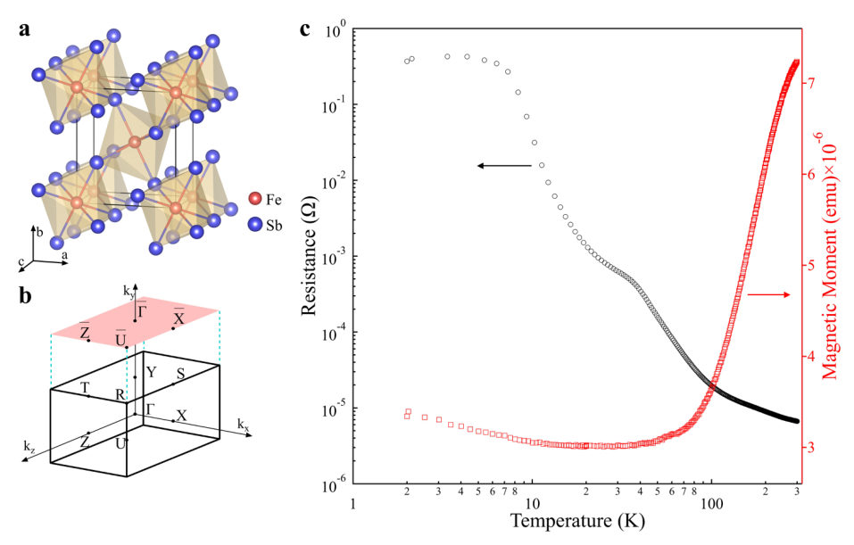
<figcaption class="paper-figure-caption"><b>Fig 1.</b> FIG. 1: Crystal Structure, Transport and Magnetic Properties of FeSb2. a, Crystal structure of FeSb2, visualized using VESTA[32]. b, First Brillouin zone of FeSb2 and the projected surface Brillouin zone of the (010) surface, with the corresponding high-symmetry points indicated. c, Temperature-dependent resistance (black curve) and magnetization (red curve) of FeSb2. A pronounced resistance plateau is observed below ∼6 K.</figcaption>
</figure>
<figure class="paper-figure-card">
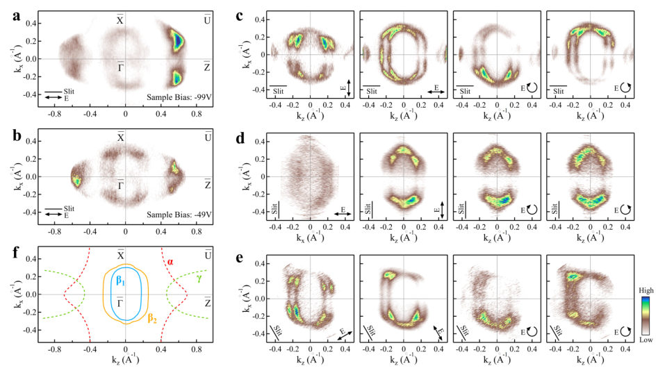
<figcaption class="paper-figure-caption"><b>Fig 2.</b> FIG. 2: Fermi surface mappings of FeSb2 measured at 16 K under different sample bias voltages[31] and different polarization geometries. The analyzer slit orientation and the electric field, E, of the laser light are indicated in each panel. a, Fermi surface mapping of the FeSb2 (010) surface measured under a sample bias voltage of -99 V. In this case, the full 2π solid angle of photoelectrons is collected. b, Same as a but measured under a sample bias voltage of -49 V. c-e, Fermi surface mappings measured under a sample bias voltage of -20 V with two linear polarizations and two circular polarizations for the slit direction along Γ–Z (c), Γ–X (d) and Γ–U (e), respectively. f, Fermi surface...</figcaption>
</figure>
<figure class="paper-figure-card">
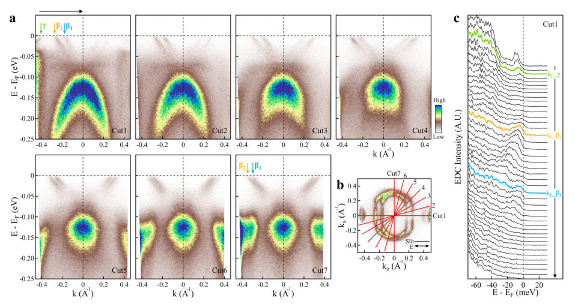
<figcaption class="paper-figure-caption"><b>Fig 3.</b> FIG. 3: Detailed Band Structures of the β1 and β2 bands around Γ measured at 16 K under the sample bias voltage of -20 V with the polarization geometry the same as in the second panel of Fig. 2c. a, Band structures measured along a series of momentum cuts centered around Γ. The corresponding cut locations (cuts 1–7) are marked by red lines in b. b, Fermi surface mapping of FeSb2 with the momentum cuts marked. c, Stacked EDCs obtained from the first panel of a measured along the momentum Cut1 which is along the Γ–Z direction.</figcaption>
</figure>
<figure class="paper-figure-card">
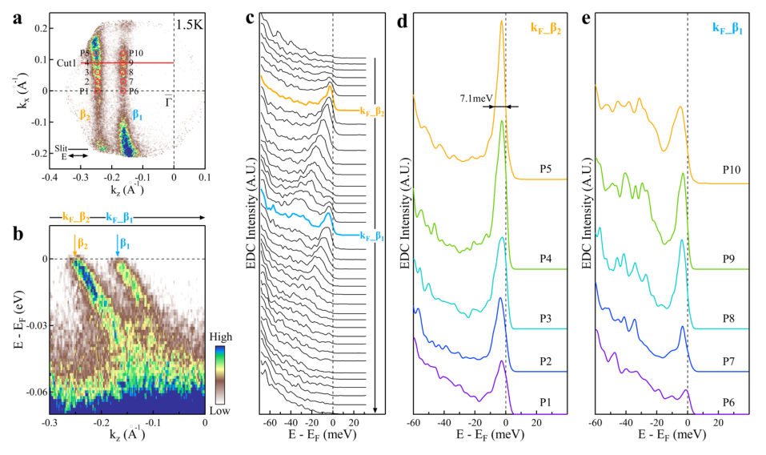
<figcaption class="paper-figure-caption"><b>Fig 4.</b> FIG. 4: Electronic structure of the β1 and β2 bands measured at 1.5 K. a, Fermi surface mapping of FeSb2 focusing on the β1 and β2 sheets. b, Band structure along the momentum cut 1 marked by the red line in a. c, Stacked EDCs obtained from b. d, EDCs along the β2 Fermi surface. The corresponding kF points (P1–P5) are marked by red circles in a. For clarity, the EDCs are offset along the vertical axis. e, Same as d but for the β1 Fermi surface, with the kF points (P6–P10) marked by red circles in a.</figcaption>
</figure>
<figure class="paper-figure-card">
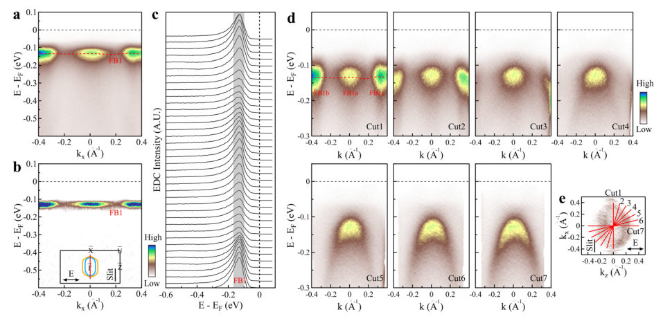
<figcaption class="paper-figure-caption"><b>Fig 5.</b> FIG. 5: Observation of a flat band FB1 at a binding energy of ∼127 meV and its momentum dependence. a, Band structure measured along the Γ–X direction, showing a flat- band feature (FB1) at about 127 meV below EF . b, EDC second derivative of a. The measurement geometry and the location of the momentum cut (red line) are shown in the inset. c, Stacked EDCs obtained from a where the flat band FB1 features are highlighted. d, Band structures measured along a series of momentum cuts centered around Γ. The corresponding cut locations (cuts 1–7) are marked by red lines in e. e, Fermi surface mapping of FeSb2 with the momentum cuts marked.</figcaption>
</figure>
</div>
<p><strong>Summary.</strong> This experimental study uses ARPES to probe the electronic structure of the correlated material FeSb2, a Kondo insulator candidate. Key findings include observing anisotropic splitting in surface states and identifying two distinct, low-energy flat bands. These results offer new insights into the material's correlated electronic behavior and its potential topological nature.</p>
<p><strong>Why it may be interesting.</strong> The detailed mapping of surface states and the identification of sharp, low-energy flat bands in a correlated material like FeSb2 provide crucial experimental benchmarks for theoretical models attempting to describe topological superconductivity or Kondo physics in strongly correlated systems.</p>
<details>
<summary>Detailed structure</summary>
<p><strong>Main problem.</strong> The study investigates the electronic structure of FeSb2, a correlated narrow-gap semiconductor candidate for a 3d-electron Kondo insulator, focusing on the origin of its low-temperature resistance plateau and the nature of its surface states.</p>
<p><strong>Main result.</strong> The research revealed clear anisotropic splitting in the surface states and the presence of two distinct low-energy flat-band-like features ($\sim 127$ meV and $\sim 70$ meV) at low temperatures.</p>
<p><strong>Method.</strong> The primary method employed was systematic high-resolution laser-based Angle-Resolved Photoemission Spectroscopy (ARPES) performed at various temperatures.</p>
<p><strong>Model / system.</strong> The physical system is FeSb2, which crystallizes in the orthorhombic marcasite structure and is being treated as a correlated topological Kondo insulator candidate.</p>
<p><strong>Key observables.</strong> Anisotropic splitting of surface states ($eta_1, eta_2$), two flat-band features (FB1 at $\sim 127$ meV, FB2 at $\sim 70$ meV), and temperature-dependent spectral weight enhancement.</p>
<p><strong>Important parameters / regimes.</strong> Low temperatures ($<6$ K, down to 1.5 K), binding energies ($\sim 127$ meV, $\sim 70$ meV), and momentum cuts along high-symmetry directions ($\Gamma–Z, \Gamma–X$).</p>
<p><strong>Assumptions / limitations.</strong> The analysis relies on ARPES measurements, which are highly sensitive to surface properties, and the topological origin of the states remains unresolved.</p>
<p><strong>Figures summary.</strong> Figures detail the crystal structure, Fermi surface mappings showing $eta_1/eta_2$ sheets, and band structures confirming the anisotropic splitting and the momentum dependence of the two observed flat bands (FB1 and FB2).</p>
<p><strong>Paper structure.</strong> The paper first characterizes the material's transport properties (resistance plateau) and then uses ARPES to map the electronic structure, detailing the anisotropic surface splitting, followed by the specific observation and characterization of the two distinct low-energy flat bands.</p>
</details>
<details>
<summary>Abstract</summary>
<p>FeSb$_2$ is a correlated narrow-gap semiconductor that has often been discussed as a $3d$-electron Kondo insulator candidate and exhibits a low-temperature resistance plateau with possible surface-dominated conduction. We carried out a systematic high-resolution laser-based angle-resolved photoemission spectroscopy (ARPES) study of FeSb$_2$ to investigate its electronic structure. The surface states around the zone center show clear anisotropic splitting. When the temperature is lowered into the resistance plateau regime ($<6\,\mathrm{K}$), the surface states remain robust, but their photoemission peaks become much sharper and gain spectral weight. Two distinct flat-band-like features are observed at low energy. One is located at $\sim$127 meV below the Fermi level, which exists only along a specific high-symmetry direction, while the other is located at $\sim$70 meV below the Fermi level and is present along all the measured momentum cuts around the zone center. These results provide new information to understand the renormalization effects, the resistance plateau, and the topological nature of FeSb$_2$.</p>
</details>
<p><sub><a href="#top">↑ back to top</a></sub></p>

<p><a id="paper-2609.24606"></a></p>
<h3 id="benchmarking-higher-ranking-multipoles-and-polarizability-tensors-for-small-molecular-systems"><a href="http://arxiv.org/abs/2609.24606v1">Benchmarking higher-ranking multipoles and polarizability tensors for small molecular systems</a></h3>
<p><strong>Authors:</strong> Bruno V. von Bruening, Alston J. Misquitta<br>
<strong>Type:</strong> theory · <strong>Category:</strong> other · <strong>PDF:</strong> <a href="https://arxiv.org/pdf/2609.24606v1">https://arxiv.org/pdf/2609.24606v1</a><br>
<strong>Analysis basis:</strong> full PDF text, analyzed in chunks</p>
<div class="figure-strip-hint">↔ Scroll figures horizontally</div>
<div class="paper-figures-scroll">
<figure class="paper-figure-card">
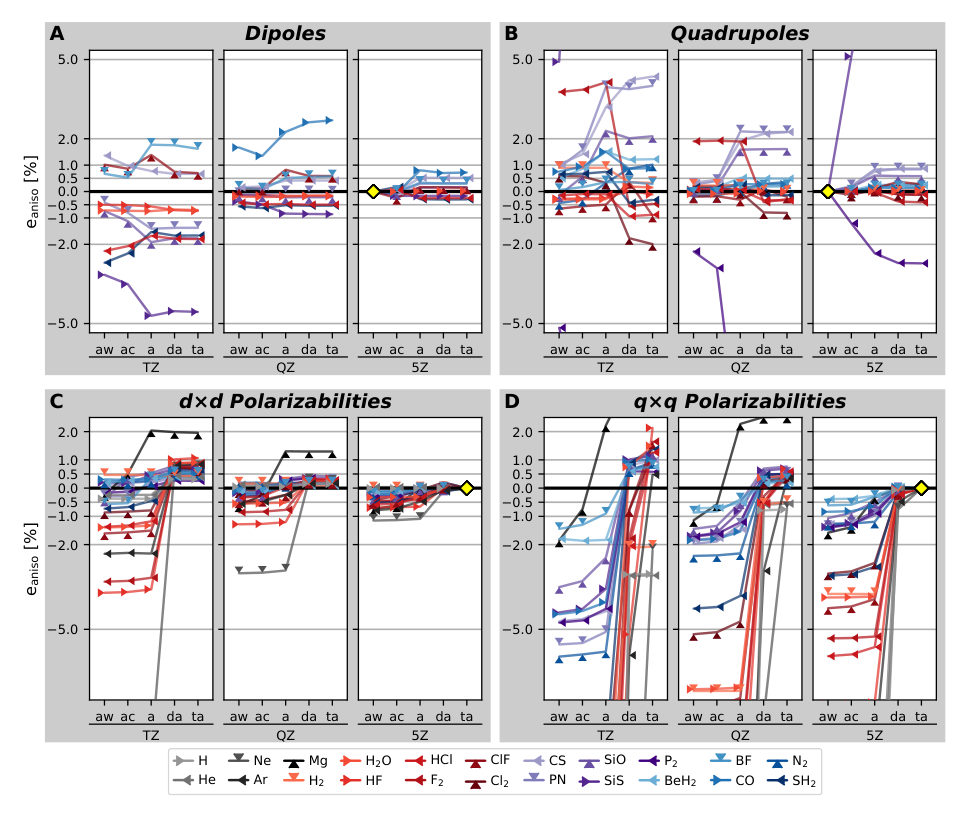
<figcaption class="paper-figure-caption"><b>Fig 1.</b> Figure 1: Anisotropic errors compared to the largest considered basis set. This is t-aug-cc-pV5Z for polarizabilities and aug-cc-pwcV5Z for multipoles. Single, double, and triple augmentation are indicated by a, da, ta, while wc and c indicate weighted and standard core polarization.</figcaption>
</figure>
<figure class="paper-figure-card">

<figcaption class="paper-figure-caption"><b>Fig 2.</b> Figure 2: RMS of relative anisotropic error against the reference basis (marked deep green) at CCSD(T). The particles shown in the extension level denote single, double, and triple augmentation by a, da, and ta, while weighted and conventional core polarization are denoted at wc and c. The following outliers were removed from the averaging: CO for dipoles, SiS and P2 for quadrupoles, Mg for DDpols, and Ne, Ar, Mg for QQpols.</figcaption>
</figure>
<figure class="paper-figure-card">
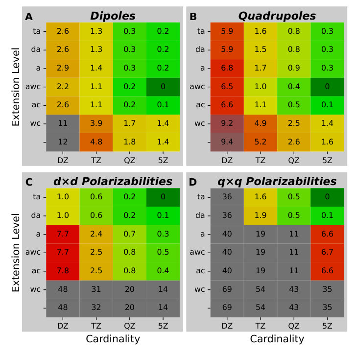
<figcaption class="paper-figure-caption"><b>Fig 3.</b> Figure 1 shows the data for DDpols and QQpols in panels C and D. Once again, we focus</figcaption>
</figure>
<figure class="paper-figure-card">
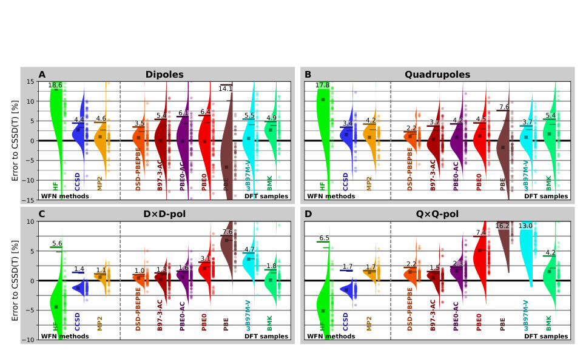
<figcaption class="paper-figure-caption"><b>Fig 4.</b> Figure 3: Distribution of eaniso made against CCSD(T) at da(wC)VQZ. For each distribution, RMS(eaniso) is specified by a number and its position marked by a long, thick horizontal dash; MAE(eaniso) is located with a shorter, thinner dash; and MSE(eaniso) is indicated by the square.</figcaption>
</figure>
<figure class="paper-figure-card">
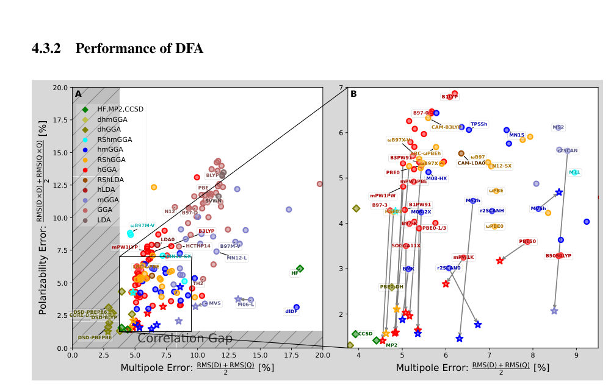
<figcaption class="paper-figure-caption"><b>Fig 5.</b> Figure 4: Aggregate polarizability against aggregate multipole RMSE, with each dot a DFA colored according to its class. Stars mark the GRAC version of the corresponding base DFA from which the arrow originates. For labeled DFA, see Table 1 for performance scores.</figcaption>
</figure>
</div>
<p><strong>Summary.</strong> This paper benchmarks the accuracy of various quantum chemical methods for calculating higher-order molecular properties, including quadrupole moments and polarizabilities, for small molecules. By comparing results from HF, MP2, CCSD, and numerous DFT functionals against CCSD(T) references, the authors identify the best-performing functionals for holistic accuracy. The findings provide critical guidance for developing reliable computational models for intermolecular forces.</p>
<p><strong>Why it may be interesting.</strong> This work directly impacts the accuracy of intermolecular interaction models used in AMO physics, as accurate potential energy surfaces and interaction parameters rely on correctly calculated multipole expansions.</p>
<details>
<summary>Detailed structure</summary>
<p><strong>Main problem.</strong> The accurate modeling of intermolecular interactions requires calculating molecular properties beyond simple dipolar terms, necessitating the inclusion of higher-ranking multipoles and polarizabilities.</p>
<p><strong>Main result.</strong> The asymptotically corrected hybrid GGA B97-3-AC and PBE0-AC were found to be the best-performing density functionals for simultaneously describing dipole, quadrupole, and polarizabilities across a set of molecules.</p>
<p><strong>Method.</strong> The study performs a holistic performance analysis by calculating molecular properties using various electronic structure methods (HF, MP2, CCSD, and multiple DFTs) against high-level CCSD(T) reference data.</p>
<p><strong>Model / system.</strong> The work focuses on small, non-spin-polarized molecules, providing reference data for 73 different compounds. The calculations involve determining molecular dipole and quadrupole moments, as well as dipole-dipole and quadrupole-quadrupole polarizabilities.</p>
<p><strong>Key observables.</strong> Molecular dipole moments, quadrupole moments, dipole-dipole polarizabilities, and quadrupole-quadrupole polarizabilities.</p>
<p><strong>Important parameters / regimes.</strong> The analysis considers the impact of basis set choice, the need for asymptotic corrections (GRAC scheme), and the correlation level (HF, MP2, CCSD).</p>
<p><strong>Assumptions / limitations.</strong> The paper assumes that accurate intermolecular interaction models require simultaneous high accuracy across multiple multipole moments, and it notes that the choice of finite field strength must be carefully managed.</p>
<p><strong>Paper structure.</strong> The paper establishes the need for higher-order multipole calculations for intermolecular forces, presents CCSD(T) benchmarks, performs a comparative analysis of various DFTs across all four property types, and concludes with recommendations on basis sets and functional performance.</p>
</details>
<details>
<summary>Abstract</summary>
<p>Molecular properties govern how molecules interact with one another or external fields. Accurate molecular properties are essential for constructing intermolecular interaction models, and to achieve high accuracy we need to go beyond leading-order (dipolar) terms.   This work presents CCSD(T) references for 73 small non-spin-polarized molecules for molecular dipole and quadrupole moments, and dipole-dipole and quadrupole-quadrupole polarizabilities. Using these results, we provide a holistic performance analysis of molecular properties computed with HF, MP2, CCSD, and a wide range of density-functional methods. Additionally, we investigate in detail what levels of basis sets are required to simultaneously describe all properties in the data set.   The best-performing density functionals for all four properties are the asymptotically cor- rected hybrid GGAs B97-3-AC, closely followed by PBE0-AC. Surprisingly, modern meta- GGAs and range-separated functionals perform inconsistently, with large errors in the quadrupo- lar properties. These results have direct implications for methods for intermolecular interac- tions, such as symmetry-adapted perturbation theory based on density functional theory, or for the quality of properties and interactions in machine-learning datasets.   Finally, for DFT methods, the Jensen aug-pcseg-2 basis set is a computationally efficient alternative to more established basis sets, but for generating correlated references, third-row elements benefit from core polarization, and double augmentation is strictly necessary for quadrupole-quadrupole polarizabilities.</p>
</details>
<p><sub><a href="#top">↑ back to top</a></sub></p>

<p><a id="paper-2609.22729"></a></p>
<h3 id="can-chemically-inspired-parameter-initialization-mitigate-barren-plateaus-in-variational-quantum-eigensolvers"><a href="http://arxiv.org/abs/2609.22729v1">Can Chemically Inspired Parameter Initialization Mitigate Barren Plateaus in Variational Quantum Eigensolvers?</a></h3>
<p><strong>Authors:</strong> Zhangyu Yang, Jinzhao Sun, Jianpeng Chen, Weitang Li, Zhigang Shuai<br>
<strong>Type:</strong> theory · <strong>Category:</strong> quantum information and computing · <strong>PDF:</strong> <a href="https://arxiv.org/pdf/2609.22729v1">https://arxiv.org/pdf/2609.22729v1</a><br>
<strong>Analysis basis:</strong> full PDF text, analyzed in chunks</p>
<div class="figure-strip-hint">↔ Scroll figures horizontally</div>
<div class="paper-figures-scroll">
<figure class="paper-figure-card">

<figcaption class="paper-figure-caption"><b>Fig 1.</b> Figure 1: Verification of the sufficient condition for local BP freedom at the Hartree–Fock initialization for (a) hydrogen-chain and (b) Hubbard-model benchmarks. The relevant excitation-energy scale |Eµ−E0|</figcaption>
</figure>
<figure class="paper-figure-card">
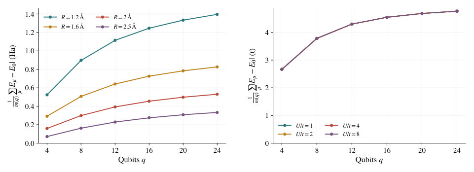
<figcaption class="paper-figure-caption"><b>Fig 2.</b> Figure 1 tests the sufficient HF condition for H-chain and Hubbard families. For both</figcaption>
</figure>
<figure class="paper-figure-card">

<figcaption class="paper-figure-caption"><b>Fig 3.</b> Figure 2: Parameter-normalized Hessian Frobenius norm as a function of the number of qubits q for different bond lengths R at HF, MP2, and random UCCSD initialization centers for the hydrogen-chain benchmarks. (a) At the HF center, the normalized Hessian norm remains large and generally increases with system size. (b) The same behavior persists at the MP2 center. (c) In contrast, the mean over 32 random centers decreases strongly with increasing q for all bond lengths considered. Thus, chemically motivated HF and MP2 centers retain substantial local curvature as the system grows, whereas random regions of the UCCSD parameter space become progressively flatter.</figcaption>
</figure>
<figure class="paper-figure-card">

<figcaption class="paper-figure-caption"><b>Fig 4.</b> Figure 3 shows the local gradient variance around the HF and MP2 centers of the</figcaption>
</figure>
<figure class="paper-figure-card">
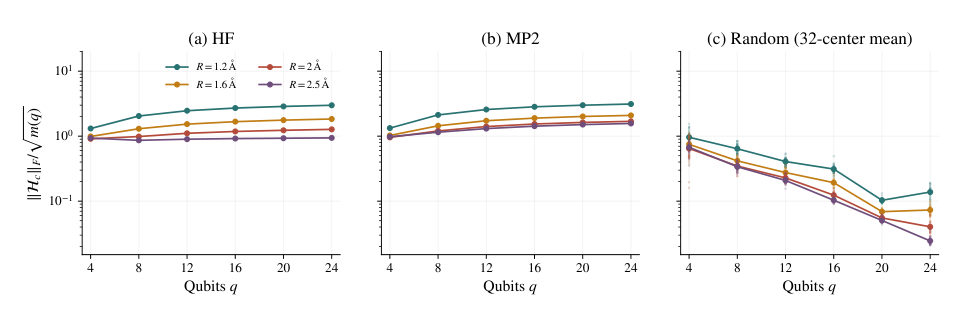
<figcaption class="paper-figure-caption"><b>Fig 5.</b> Fig. 3(a) shift systematically toward smaller patch radii and their magnitudes decrease.</figcaption>
</figure>
</div>
<p><strong>Summary.</strong> This paper investigates how chemically informed parameter initializations can help Variational Quantum Eigensolvers (VQE) avoid barren plateaus (BPs) during molecular simulations. By analyzing the local gradient variance, the authors prove that starting near physically relevant states (like HF or MP2) leads to a favorable, polynomially scaling optimization landscape. This highlights the practical advantage of incorporating chemical knowledge into quantum algorithm design.</p>
<p><strong>Why it may be interesting.</strong> It directly tackles a critical scaling issue in quantum chemistry algorithms, providing theoretical evidence that physical intuition (chemical initialization) can overcome generic quantum optimization barriers.</p>
<details>
<summary>Detailed structure</summary>
<p><strong>Main problem.</strong> The paper addresses the major obstacle of barren plateaus (BPs) in Variational Quantum Eigensolvers (VQE) used for molecular electronic structure calculations.</p>
<p><strong>Main result.</strong> Chemically motivated initializations (HF or MP2) mitigate local barren plateaus, showing polynomial decay of gradient variance with system size, unlike the exponential decay seen with random initializations.</p>
<p><strong>Method.</strong> The authors analyzed the local gradient variance of the VQE cost function using theoretical bounds and statistical fitting techniques to compare scaling behaviors.</p>
<p><strong>Model / system.</strong> The model is molecular electronic structure calculation using the UCCSD ansatz within the VQE framework. The Hamiltonian is the second-quantized electronic Hamiltonian, and the optimization is performed over variational parameters $\theta$.</p>
<p><strong>Key observables.</strong> Local gradient variance ($V_q$), energy expectation value ($E_n$), and the scaling behavior (polynomial vs. exponential) of this variance with system size ($q$).</p>
<p><strong>Important parameters / regimes.</strong> The initialization centers ($\theta_c$) include Hartree-Fock (HF) and MP2 amplitudes. The analysis focuses on the local optimization region rather than global behavior.</p>
<p><strong>Assumptions / limitations.</strong> The analysis focuses on local barren plateaus, and the derived condition for BP-freedom relies on bounding the Hessian Frobenius norm and local derivatives.</p>
<p><strong>Figures summary.</strong> Figures show trajectory-resolved local gradient variance ($    ext{Var}_{\max}$) for H-chains, comparing HF/MP2 initialization to random starts, and statistical fits (BIC values) confirming power-law scaling for chemical initializations.</p>
<p><strong>Paper structure.</strong> The paper first establishes the VQE framework and the BP problem. It then develops theoretical conditions (Theorem 1) based on local gradient variance bounds. The core contribution is demonstrating that chemically informed initializations satisfy these conditions, which is validated through trajectory analysis and statistical model comparison.</p>
</details>
<details>
<summary>Abstract</summary>
<p>Recent advances in the variational quantum eigensolver (VQE) have strengthened its promise for molecular electronic-structure calculations on near-term noisy intermediate-scale quantum (NISQ) devices. However, barren plateaus (BPs) remain a major obstacle to scaling VQE, as vanishing gradients can severely obstruct optimization at large scale. While most BP studies focus on randomly initialized circuits and global gradient behavior, practical quantum chemistry VQE typically uses chemically motivated initializations and local optimization around HF- or MP2-derived states. Although chemically informed initializations are widely expected to improve VQE trainability, how they mitigate local barren plateaus remains unclear. We therefore study the occurrence of local barren plateaus in molecular UCCSD-VQE, considering both chemically motivated initialization points and iterates along the corresponding optimization trajectories. In the benchmarks considered here, chemically initialized starting points and variational trajectories show polynomial decay of local gradient variance with system size instead of the exponential BP-like decay observed for random controls, indicating that chemical initialization mitigates barren plateaus in the local optimization regions and highlights the trainability advantage of chemically motivated VQE strategies.</p>
</details>
<p><sub><a href="#top">↑ back to top</a></sub></p>

<p><a id="paper-2609.23609"></a></p>
<h3 id="casimir-force-in-a-water-nanolayer-confined-by-graphene-sheets"><a href="http://arxiv.org/abs/2609.23609v1">Casimir force in a water nanolayer confined by graphene sheets</a></h3>
<p><strong>Authors:</strong> Wijnand Broer, Jure Dobnikar<br>
<strong>Type:</strong> theory · <strong>Category:</strong> other · <strong>PDF:</strong> <a href="https://arxiv.org/pdf/2609.23609v1">https://arxiv.org/pdf/2609.23609v1</a><br>
<strong>Analysis basis:</strong> full PDF text, analyzed in chunks</p>
<div class="figure-strip-hint">↔ Scroll figures horizontally</div>
<div class="paper-figures-scroll">
<figure class="paper-figure-card">
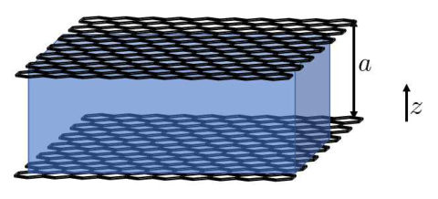
<figcaption class="paper-figure-caption"><b>Fig 1.</b> FIG. 1. A water layer confined by graphene sheets (not to scale). The water layer is modeled as an anisotropic 3D bulk medium with a thickness 푎whereas the graphene sheets are treated as 2D. Outside the graphene sheets there is vacuum.</figcaption>
</figure>
<figure class="paper-figure-card">
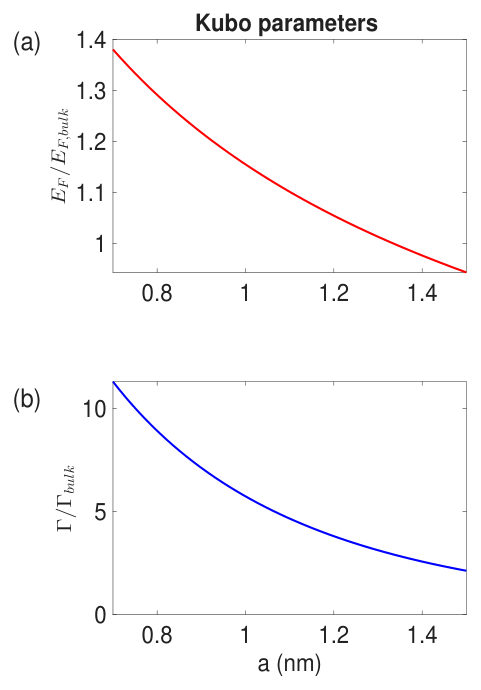
<figcaption class="paper-figure-caption"><b>Fig 2.</b> FIG. 2. The parameters of the Kubo model compared to the bulk case, where there is no thickness dependence. Here 퐸퐹bulk = 0.15 eV and Γbulk = 0.91 THz.</figcaption>
</figure>
<figure class="paper-figure-card">
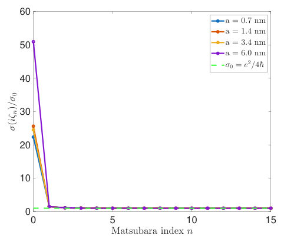
<figcaption class="paper-figure-caption"><b>Fig 3.</b> FIG. 3. The Kubo conductivity at imaginary frequencies. The low- frequency case (푛= 0) is affected by the water layer.</figcaption>
</figure>
<figure class="paper-figure-card">
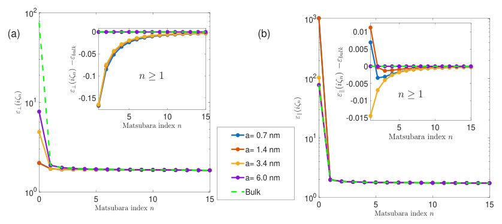
<figcaption class="paper-figure-caption"><b>Fig 4.</b> FIG. 4. The permittivity components of confined water at different thicknesses. Panel (a): the perpendicular component Panel (b): the parallel component. Insets: deviations from the bulk case. The perpendicular and parallel components for 푛= 0 were taken from Refs. 16 and 17, respectively. The components for 푛&gt; 0 were taken from Ref. 37. The bulk permittivity was taken from Ref. 18.</figcaption>
</figure>
<figure class="paper-figure-card">
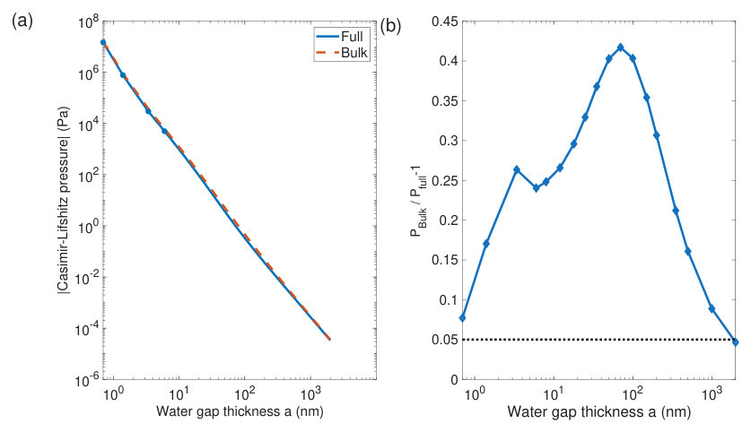
<figcaption class="paper-figure-caption"><b>Fig 5.</b> FIG. 5. (a) The Casimir pressure. (b) The relative effect of confinement (at 푎&lt; 6 nm and interface effects (at 푎≥6 nm). The dashed line shows where the latter effect is less than 5%.</figcaption>
</figure>
</div>
<p><strong>Summary.</strong> This work calculates the Casimir force between graphene sheets separated by a nanolayer of water, finding that the confinement significantly alters the force compared to bulk predictions. The deviation is attributed to both geometric confinement and surface interface effects, which are modeled using anisotropic dielectric functions. This research is vital for understanding quantum vacuum forces in liquid-graphene nano-devices.</p>
<p><strong>Why it may be interesting.</strong> The study provides quantitative predictions for how nanoscale liquid structure (water) modifies fundamental quantum vacuum forces (Casimir), which is crucial for understanding quantum electrodynamics in confined geometries.</p>
<details>
<summary>Detailed structure</summary>
<p><strong>Main problem.</strong> The paper theoretically investigates how the presence of a nanolayer of liquid water confined between two graphene sheets modifies the Casimir force between the sheets.</p>
<p><strong>Main result.</strong> Confinement reduces the Casimir force by up to 26% at small thicknesses, and the bulk model significantly underestimates the force at larger separations due to interface effects, which exhibit non-monotonic behavior.</p>
<p><strong>Method.</strong> The Casimir force is calculated using the Lifshitz formula, requiring the solution of Maxwell's equations via the transfer matrix method for an anisotropic gap.</p>
<p><strong>Model / system.</strong> The system consists of two graphene sheets sandwiching an anisotropic water nanolayer. The water permittivity is modeled as thickness-dependent, distinguishing between confinement and interface effects.</p>
<p><strong>Key observables.</strong> Casimir force ($\Pi_{	ext{Cas}}(a)$) and Casimir free energy ($    ext{E}_{    ext{Cas}}(a)$).</p>
<p><strong>Important parameters / regimes.</strong> Water gap thickness ($a$), temperature ($T=300$ K), and the anisotropic dielectric tensor components ($\epsilon_{\parallel}, \epsilon_{\perp}$).</p>
<p><strong>Assumptions / limitations.</strong> The water layer is modeled as an anisotropic 3D bulk medium, and the graphene sheets are treated as 2D using the local Kubo model.</p>
<p><strong>Figures summary.</strong> Figures illustrate the geometry of the confined system and compare the calculated Casimir pressure under confinement versus the bulk model predictions, highlighting the magnitude of the interface effect.</p>
<p><strong>Paper structure.</strong> The analysis proceeds by deriving the force using the Lifshitz formula, modeling the anisotropic permittivity of the confined water using effective medium approximations, and then comparing the results to the bulk limit to quantify confinement and interface effects.</p>
</details>
<details>
<summary>Abstract</summary>
<p>Casimir forces, arising from quantum and thermal fluctuations, depend strongly on the electromagnetic susceptibilities of the interacting materials. Here, we theoretically investigate the Casimir force between two graphene sheets separated by a nanometer-thin layer of liquid water. We find that, at thicknesses up to 3.4 nm, the confinement reduces the Casimir force by up to 26 % compared to the bulk case. At larger thicknesses, the bulk model underestimates the Casimir force by up to 42 % due to the interface effect. This effect does not decrease monotonically as a function of the layer thickness: it increases up to a maximum at 70 nm and it slowly declines to the bulk limit only at 2 microns. We separately assess the effect of nanoscale confinement on the electronic response of graphene, which has no effect on the Casimir force.</p>
</details>
<p><sub><a href="#top">↑ back to top</a></sub></p>

<p><a id="paper-2609.22902"></a></p>
<h3 id="characterizing-local-unitary-equivalence-of-multipartite-states-by-local-unitary-bargmann-invariants"><a href="http://arxiv.org/abs/2609.22902v1">Characterizing local unitary equivalence of multipartite states by local unitary Bargmann invariants</a></h3>
<p><strong>Authors:</strong> Yi Shen, Lin Chen, Shao-Ming Fei<br>
<strong>Type:</strong> theory · <strong>Category:</strong> quantum information and computing · <strong>PDF:</strong> <a href="https://arxiv.org/pdf/2609.22902v1">https://arxiv.org/pdf/2609.22902v1</a><br>
<strong>Analysis basis:</strong> full PDF text, analyzed in chunks</p>
<div class="figure-strip-hint">↔ Scroll figures horizontally</div>
<div class="paper-figures-scroll">
<figure class="paper-figure-card">
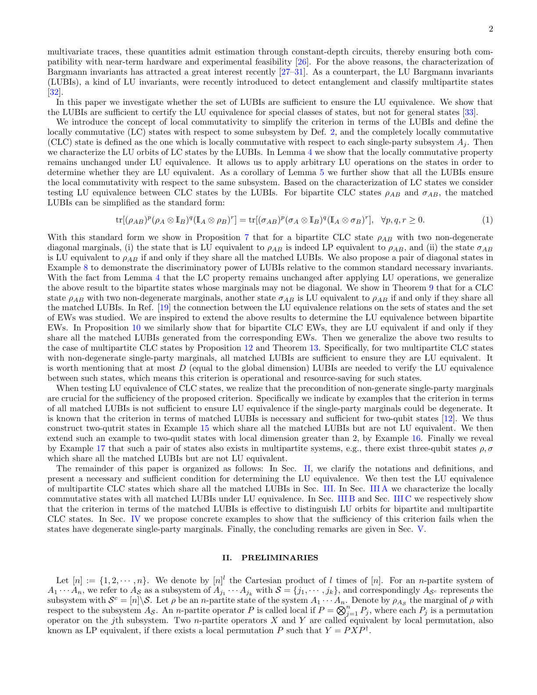
<figcaption class="paper-figure-caption"><b>Fig 1.</b> Low-resolution page preview, page 2</figcaption>
</figure>
<figure class="paper-figure-card">
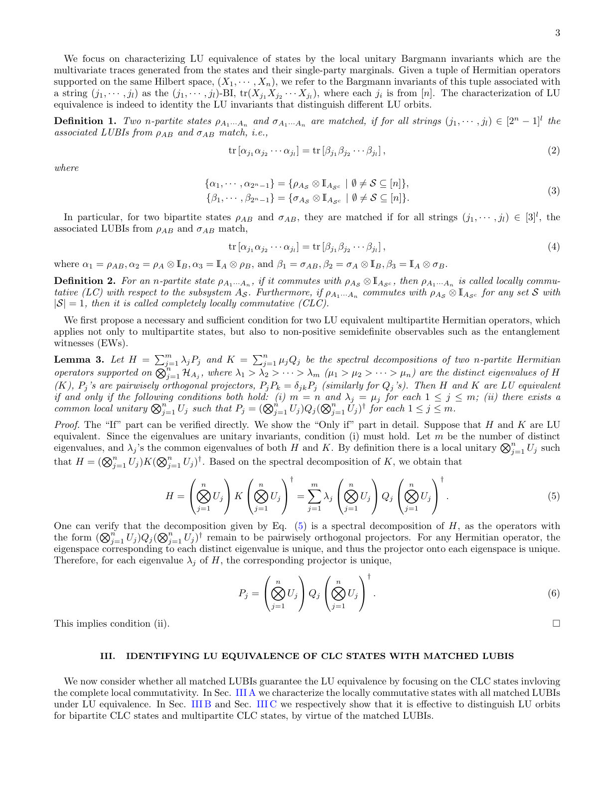
<figcaption class="paper-figure-caption"><b>Fig 2.</b> Low-resolution page preview, page 3</figcaption>
</figure>
<figure class="paper-figure-card">
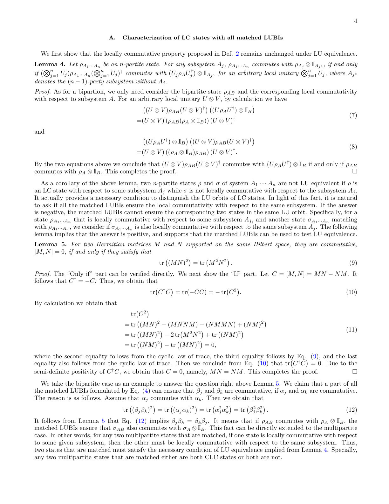
<figcaption class="paper-figure-caption"><b>Fig 3.</b> Low-resolution page preview, page 4</figcaption>
</figure>
<figure class="paper-figure-card">
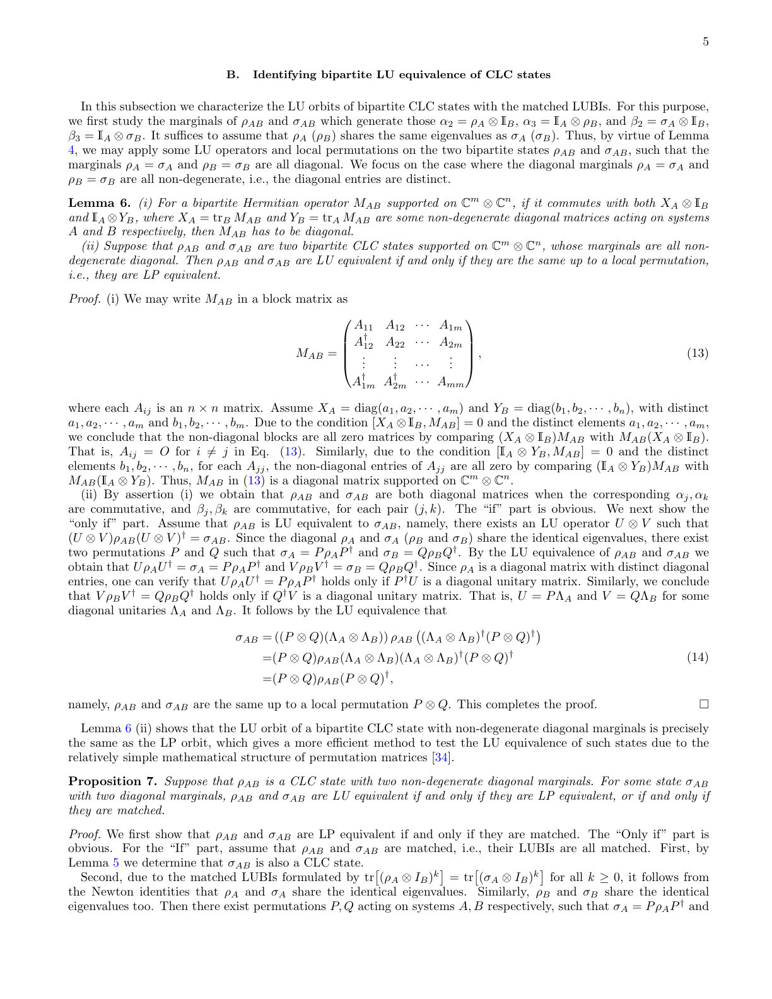
<figcaption class="paper-figure-caption"><b>Fig 4.</b> Low-resolution page preview, page 5</figcaption>
</figure>
<figure class="paper-figure-card">
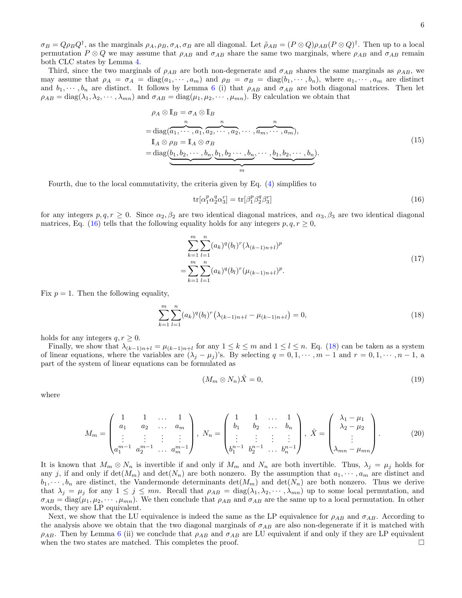
<figcaption class="paper-figure-caption"><b>Fig 5.</b> Low-resolution page preview, page 6</figcaption>
</figure>
</div>
<p><strong>Summary.</strong> This theoretical paper investigates when local unitary invariants (LUBIs) are sufficient to determine if two multipartite quantum states are locally unitarily equivalent. The authors find that this equivalence holds for a specific class of states (CLC states) only if the states' single-party marginals are non-degenerate. When degeneracy occurs, the LUBIs fail to distinguish between non-equivalent states.</p>
<p><strong>Why it may be interesting.</strong> The work provides a precise mathematical tool (LUBIs) to distinguish between physically equivalent states (LU orbit) and states that merely share certain algebraic invariants, which is fundamental for characterizing entanglement structure.</p>
<details>
<summary>Detailed structure</summary>
<p><strong>Main problem.</strong> The paper aims to characterize the local unitary (LU) equivalence of multipartite quantum states using Local Unitary Bargmann Invariants (LUBIs).</p>
<p><strong>Main result.</strong> The LUBIs are sufficient to guarantee LU equivalence for multipartite Completely Locally Commutative (CLC) states only when their single-party marginals are non-degenerate; otherwise, counterexamples exist.</p>
<p><strong>Method.</strong> The authors use algebraic invariants (LUBIs, defined via multivariate traces) and structural properties (CLC condition) to establish necessary and sufficient conditions for state equivalence.</p>
<p><strong>Model / system.</strong> The study focuses on general $n$-partite quantum states ($
ho_{A_1\cdots A_n}$), with specific attention paid to the subclass of Completely Locally Commutative (CLC) states.</p>
<p><strong>Key observables.</strong> Local Unitary Bargmann Invariants (LUBIs), which are multivariate traces of the state and its single-party marginals.</p>
<p><strong>Important parameters / regimes.</strong> The degeneracy status of the single-party marginals is the most critical parameter determining the validity of the LUBI criterion.</p>
<p><strong>Assumptions / limitations.</strong> The sufficiency of the LUBIs is strongly dependent on the assumption that the single-party marginals are non-degenerate; the analysis is most rigorous in the CLC state setting.</p>
<p><strong>Paper structure.</strong> The paper progresses from defining the general problem of LU equivalence to focusing on CLC states. It establishes sufficiency under non-degenerate marginals (using LUBIs) and then provides concrete counterexamples (e.g., 3-qubit systems) demonstrating failure when marginals are degenerate.</p>
</details>
<details>
<summary>Abstract</summary>
<p>Local unitary (LU) equivalent states are crucial for understanding the structure of quantum entanglement. We investigate the LU equivalence based on the LU Bargmann invariants (LUBIs). We consider for which states the LUBIs are sufficient to ensure the LU equivalence. We focus on a class of multipartite states with complete local commutativity, called CLC states. We first show that for multipartite CLC states, all the LUBIs are sufficient to ensure the local permutation equivalence, if their single-party marginals are diagonal and non-degenerate. By virtue of the fact that the CLC property remains unchanged under local operations, we verify that the LUBIs are also sufficient to ensure the LU equivalence of multipartite CLC states whose single-party marginals are non-degenerate. Furthermore, when the single-party marginals are degenerate, we propose concrete examples of two-qudit and three-qubit systems, showing that there are states which share all the LUBIs but are not LU equivalent.</p>
</details>
<p><sub><a href="#top">↑ back to top</a></sub></p>

<p><a id="paper-2609.24445"></a></p>
<h3 id="charge-4e-superconducting-ground-state-without-pair-condensation-exact-quartet-dynamics-rigorous-order-and-a-microscopic-route"><a href="http://arxiv.org/abs/2609.24445v1">Charge-4e Superconducting Ground State without Pair Condensation: Exact Quartet Dynamics, Rigorous Order, and a Microscopic Route</a></h3>
<p><strong>Authors:</strong> Jin-Tao Jin, Pengfei Li, Yi Zhou<br>
<strong>Type:</strong> theory · <strong>Category:</strong> strongly correlated electrons · <strong>PDF:</strong> <a href="https://arxiv.org/pdf/2609.24445v1">https://arxiv.org/pdf/2609.24445v1</a><br>
<strong>Analysis basis:</strong> full PDF text, analyzed in chunks</p>
<div class="figure-strip-hint">↔ Scroll figures horizontally</div>
<div class="paper-figures-scroll">
<figure class="paper-figure-card">
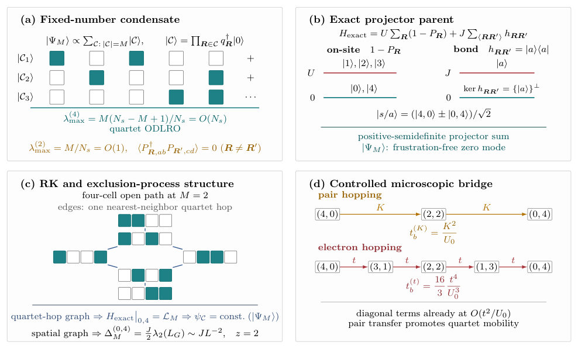
<figcaption class="paper-figure-caption"><b>Fig 1.</b> FIG. 1. Exact quartet order, parent dynamics, and microscopic route. (a) The fixed-number Dicke state is an equal-amplitude sum over configurations C of M quartet-occupied cells. Here q† R and P † R,ab create a local quartet and pair, respectively, and</figcaption>
</figure>
</div>
<p><strong>Summary.</strong> This paper establishes the theoretical existence of a charge-4e superconducting ground state that maintains robust four-electron order while suppressing conventional two-electron pairing condensation. Using exact solutions and strong-coupling expansions, the authors provide rigorous proofs and microscopic derivations demonstrating this exotic superconducting phase stability.</p>
<p><strong>Why it may be interesting.</strong> The work provides a highly detailed, mathematically rigorous framework for stabilizing higher-order superconducting phases (charge-4e) against competing lower-order instabilities (charge-2e), which is crucial for understanding exotic superconductivity in correlated materials.</p>
<details>
<summary>Detailed structure</summary>
<p><strong>Main problem.</strong> The paper addresses the theoretical challenge of establishing a superconducting ground state characterized by coherent charge-4e order while ensuring that lower-charge pairing channels (charge-2e) remain uncondensed.</p>
<p><strong>Main result.</strong> The authors rigorously prove the existence of a charge-4e superconducting phase exhibiting quartet Off-Diagonal Long-Range Order (ODLRO) without charge-2e ODLRO, even deriving its stability from microscopic hopping terms.</p>
<p><strong>Method.</strong> The analysis employs exact solutions for minimal parent Hamiltonians, strong-coupling perturbation theory, and rigorous mathematical bounds (like the linked-cluster argument) to diagnose order and stability.</p>
<p><strong>Model / system.</strong> The study focuses on a direct charge-4e superconductor modeled using parent Hamiltonians defined on connected graphs, which are subsequently analyzed via effective low-energy Hamiltonians resembling XXZ models.</p>
<p><strong>Key observables.</strong> Quartet ODLRO ($\lambda(4)_{	ext{max}}$ extensive) vs. charge-2e ODLRO ($\lambda(2)_{	ext{max}} = O(1)$), charge-4e phase stiffness ($
ho_4$), and inverse quartet compressibility.</p>
<p><strong>Important parameters / regimes.</strong> Filling fraction ($
u_4$), coupling strengths ($U_0, K, t$), and lattice dimensionality ($d \ge 2$).</p>
<p><strong>Assumptions / limitations.</strong> The analysis relies on specific parameter regimes, such as the strong-coupling limit ($\lambda \ll 1$) for the microscopic realization, and the assumption of bipartite lattices for certain stability arguments.</p>
<p><strong>Figures summary.</strong> Figure 1 illustrates the exact quartet order, the structure of the parent Hamiltonian, and the microscopic derivation path, showing eigenvalue scaling for quartet vs. pair correlations.</p>
<p><strong>Paper structure.</strong> The paper proceeds by first solving a minimal parent Hamiltonian exactly, establishing the quartet ODLRO. It then proves the result for a finite-range fermionic model using rigorous theorems, and finally derives a strong-coupling microscopic realization using electron hopping and pair hopping terms.</p>
</details>
<details>
<summary>Abstract</summary>
<p>A direct charge-\(4e\) superconductor exhibits coherent four-electron order while every charge-\(2e\) pairing channel remains uncondensed. We establish three complementary results. First, building on the \(η\)-clustering states and bipartite parent of Yoshida and Katsura, we formulate and exactly solve a minimal two-term parent on any connected graph. Its fixed-number ground states have quartet off-diagonal long-range order (ODLRO) without charge-\(2e\) ODLRO, while an exact mapping to classical hard-core exclusion dynamics yields the full fixed-sector gap and a branch of quartet-density modes. Nonzero quartet stiffness and vanishing inverse quartet compressibility identify this \(z=2\) parent as a phase-separation boundary. Second, for a finite-range fermionic family with explicit quartet transfer and sufficiently large onsite penalty, we rigorously prove quartet ODLRO without charge-\(2e\) ODLRO at half quartet filling, both at the hypercubic XY point for \(d\geq2\) and throughout a finite XXZ interval on the square lattice. Third, we derive a strong-coupling realization using only electron hopping and two-body interactions. With local gap \(U_0\), pair hopping \(K\) generates quartet motion at order \(K^2/U_0\), whereas electron hopping \(t\) first contributes at order \(t^4/U_0^3\); charge-\(2e\) excitations remain gapped at \(O(U_0)\). On bipartite lattices, positive inverse quartet compressibility opens an asymptotically controlled homogeneous \(z=1\) regime with short-ranged pair correlations, while negative curvature drives phase separation.</p>
</details>
<p><sub><a href="#top">↑ back to top</a></sub></p>

<p><a id="paper-2609.24657"></a></p>
<h3 id="circuit-hypernetworks-for-quantum-augmented-diffusion-language-models"><a href="http://arxiv.org/abs/2609.24657v1">Circuit Hypernetworks for Quantum-Augmented Diffusion Language Models</a></h3>
<p><strong>Authors:</strong> Xiaoqiang Wang, Mengyang Xiong, Jun Dai, Bang Liu<br>
<strong>Type:</strong> theory · <strong>Category:</strong> quantum information and computing · <strong>PDF:</strong> <a href="https://arxiv.org/pdf/2609.24657v1">https://arxiv.org/pdf/2609.24657v1</a><br>
<strong>Analysis basis:</strong> full PDF text, analyzed in chunks</p>
<div class="figure-strip-hint">↔ Scroll figures horizontally</div>
<div class="paper-figures-scroll">
<figure class="paper-figure-card">
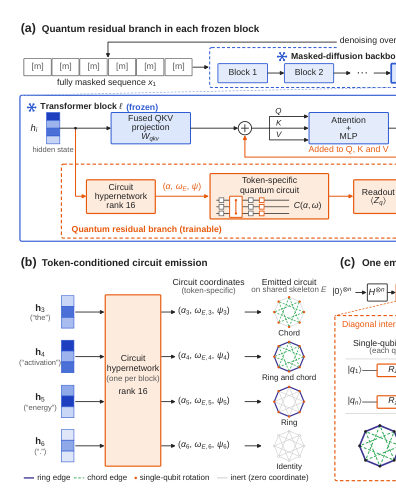
<figcaption class="paper-figure-caption"><b>Fig 1.</b> Fig. 1: Token-conditioned quantum circuit emission in HyperQ. a, In each of the 22 frozen blocks of the masked-diffusion backbone [13], a trainable quantum branch reads a token’s hidden state, emits and executes that token’s circuit, and adds the projected readout to Q, K and V . Right, six-benchmark average against register width; dashed line, frozen backbone (49.59). b, One hypernetwork per block maps each token to its own coordinates (α, ωE, ψ) on a shared skeleton E; a zero coordinate removes its gate. c, One emitted IQP circuit [41], represented by its interaction graph. Qubits are arranged on a ring, with vertices encoding single-qubit rotations Rz(αq) and ring-plus-chord edges...</figcaption>
</figure>
<figure class="paper-figure-card">
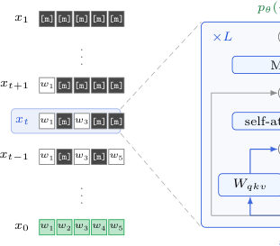
<figcaption class="paper-figure-caption"><b>Fig 2.</b> Fig. 2: The HyperQ pipeline at three scales, each panel read from bottom to top. a, Masked-diffusion generation. A fully masked sequence x1 is denoised over T rounds until the clean sequence x0 remains, each round committing the most confident pre- dictions and re-masking the rest. b, One round, expanded from the highlighted state xt, returning the token distribution pθ(· | xt) of equation (1). Inside each block the fused query-key-value projection is the only modified point, where a quantum branch runs in parallel with the classical weight Wqkv and is added into q, k, v as a residual. c, How that branch emits its circuit. From the hidden state h of one token the branch emits the rotation...</figcaption>
</figure>
<figure class="paper-figure-card">
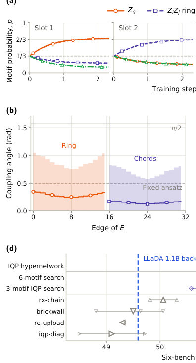
<figcaption class="paper-figure-caption"><b>Fig 3.</b> Fig. 3: Statistics of emitted per-token circuits. a, Motif-selection probability p against training step in the L = 4 slots of the 3-motif IQP search. The motifs are generator classes, single-qubit Zq and two-body ZiZj on ring and chord layers, all diagonal and inside the IQP family. The emitted circuit selects none, instead carrying every generator with a per-token angle. b, Emitted coupling angle |ωe| against edge in fixed E at 16 qubits, with the median and 10 to 90 per cent range across tokens and fixed-ansatz angle dashed. Edges are ordered ring then chord. c, 240 tokens by mean coupling angle over E (horizontal) and mean angle between emitted readout axis ψq and the nearest of Rx, Ry...</figcaption>
</figure>
<figure class="paper-figure-card">
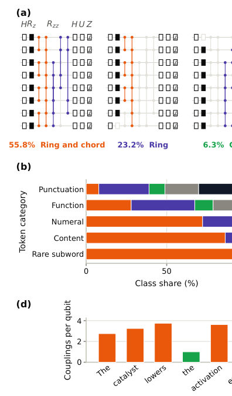
<figcaption class="paper-figure-caption"><b>Fig 4.</b> Fig. 4: Emitted circuits choose their own support. (a), The strict-IQP block emitted for each entangling arrangement, drawn on eight wires. Eight is the smallest register that admits the ring-plus-one-chord edge set at all, since the chord stride must be coprime with n and differ from 1 and n −1, which no stride satisfies at four or six qubits. Columns are the Hadamard layer, the Rz rotations, the Rzz couplings in the five parallel layers a degree-four graph edge-colours into, the second Hadamard layer, the readout rotation U(ψ) and the Z measurement. The Rz and Rzz columns sit between the two Hadamard layers, so the register sees them as Rx and Rxx, and the free single-qubit axis is U(ψ)....</figcaption>
</figure>
<figure class="paper-figure-card">
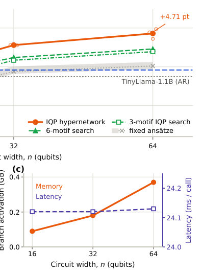
<figcaption class="paper-figure-caption"><b>Fig 5.</b> Fig. 5: Widening the emitted circuit. (a), Six-benchmark zero-shot average A against width n for the two searched circuits and the hypernetwork, and for the four fixed hand-designed ans¨atze drawn as one family, with the grey band their minimum-to- maximum range at each width and the dotted line with crosses their median. Filled markers are means over three runs and the small open circles the individual runs. The two size-matched classical baselines are horizontal references labelled on their own line. The families separate rather than run parallel, since past 32 qubits the fixed band flattens while the emitted circuit holds its rate, so the margin over the best fixed ansatz widens from...</figcaption>
</figure>
</div>
<p><strong>Summary.</strong> This paper introduces HyperQ, a novel quantum-augmented architecture for diffusion language models. It solves the computational bottleneck of large quantum circuits by restricting the circuit structure to the IQP family, allowing for efficient, classical readout calculation. The resulting model significantly boosts language understanding performance across multiple benchmarks by incorporating token-specific quantum information processing.</p>
<p><strong>Why it may be interesting.</strong> The work provides a concrete, computationally efficient architectural blueprint for integrating quantum circuits into deep learning models, specifically by controlling the complexity of the quantum readout to remain polynomial in the number of qubits.</p>
<details>
<summary>Detailed structure</summary>
<p><strong>Main problem.</strong> The paper addresses the computational challenge of integrating quantum circuits into large language models while maintaining tractability as the circuit width increases.</p>
<p><strong>Main result.</strong> The proposed HyperQ architecture successfully integrates quantum residual branches, achieving state-of-the-art performance on multiple benchmarks by scaling circuit width up to 64 qubits.</p>
<p><strong>Method.</strong> It uses a hypernetwork to emit token-conditioned parameters for a quantum residual branch, which is structured using the two-body instantaneous-quantum-polynomial (IQP) family.</p>
<p><strong>Model / system.</strong> The system is a frozen masked-diffusion language model backbone augmented by trainable quantum residual branches. The quantum computation is restricted to an IQP structure defined on a fixed sparse skeleton (ring + chord layers).</p>
<p><strong>Key observables.</strong> Average benchmark scores (e.g., 54.30 at 64 qubits), and the expectation values $\langle Z_q 
angle$ measured for each qubit.</p>
<p><strong>Important parameters / regimes.</strong> Circuit width (number of qubits, $n$), tested at 16, 32, and 64 qubits; the coupling strengths ($\omega_E$) are restricted to remain below $\pi/2$.</p>
<p><strong>Assumptions / limitations.</strong> The method relies on restricting the circuit to the IQP family to ensure the readout cost scales only linearly ($\Theta(n)$) with qubit count, and that the backbone remains frozen during training.</p>
<p><strong>Figures summary.</strong> Figures illustrate the HyperQ pipeline, showing the insertion of the quantum residual branch into the transformer block and the emission of circuit coordinates. One figure compares the constant readout cost ($\Theta(n)$) of the fixed skeleton versus the quadratic cost ($\Theta(n^2)$) of an all-to-all skeleton.</p>
<p><strong>Paper structure.</strong> The paper introduces HyperQ, details the quantum residual branch structure using a hypernetwork, explains the mathematically tractable IQP readout mechanism, and validates the approach by showing performance gains across multiple downstream language model benchmarks.</p>
</details>
<details>
<summary>Abstract</summary>
<p>Language models can be adapted by changing the computations applied to individual tokens. Quantum circuits offer one such approach, but evaluating wider circuits inside a large model can be computationally demanding. Here we introduce HyperQ, which adds token-conditioned quantum residual branches to a frozen masked-diffusion language model. A quantum residual branch is a module in each transformer block that reads a token's hidden state, emits the coordinates of that token's circuit, executes it, and adds the measured values back through a residual connection. The backbone remains frozen, and only the added branches are trained. Within each branch, a lightweight circuit hypernetwork emits token-specific rotation angles, coupling strengths, and measurement axes in a shared sparse circuit structure. The required expectation values have an exact classical expression whose evaluation cost grows linearly with the qubit count, enabling circuits from 16 to 64 qubits to be trained within a 1.1-billion-parameter backbone. Across downstream benchmarks, increasing circuit width raises the average score from 47.65 to 54.30. At 64 qubits, HyperQ exceeds the backbone and its low-rank-adapted counterpart by 4.71 and 3.67 points, respectively. HyperQ is fine-tuned on 20,000 prompt-response pairs, compared with 200,000 for the classical baselines. These findings support token-conditioned circuit emission as a tractable architectural approach to quantum-augmented language modelling.</p>
</details>
<p><sub><a href="#top">↑ back to top</a></sub></p>

<p><a id="paper-2609.23476"></a></p>
<h3 id="comparative-study-of-quantum-and-classical-machine-learning-models-in-binary-classification"><a href="http://arxiv.org/abs/2609.23476v1">Comparative Study of Quantum and Classical Machine Learning Models in Binary Classification</a></h3>
<p><strong>Authors:</strong> Anand Kumar Mishra, Ramanuj Awasthi<br>
<strong>Type:</strong> both · <strong>Category:</strong> quantum information and computing · <strong>PDF:</strong> <a href="https://arxiv.org/pdf/2609.23476v1">https://arxiv.org/pdf/2609.23476v1</a><br>
<strong>Analysis basis:</strong> full PDF text, analyzed in chunks</p>
<div class="figure-strip-hint">↔ Scroll figures horizontally</div>
<div class="paper-figures-scroll">
<figure class="paper-figure-card">
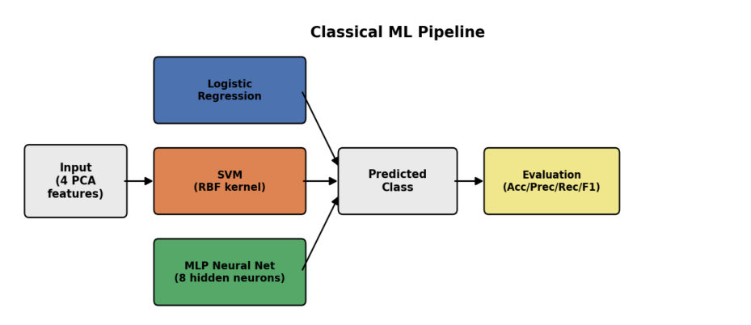
<figcaption class="paper-figure-caption"><b>Fig 1.</b> Fig. 1. Classical Machine Learning pipeline: the same 4-dimensional PCA-reduced input is independently passed</figcaption>
</figure>
<figure class="paper-figure-card">
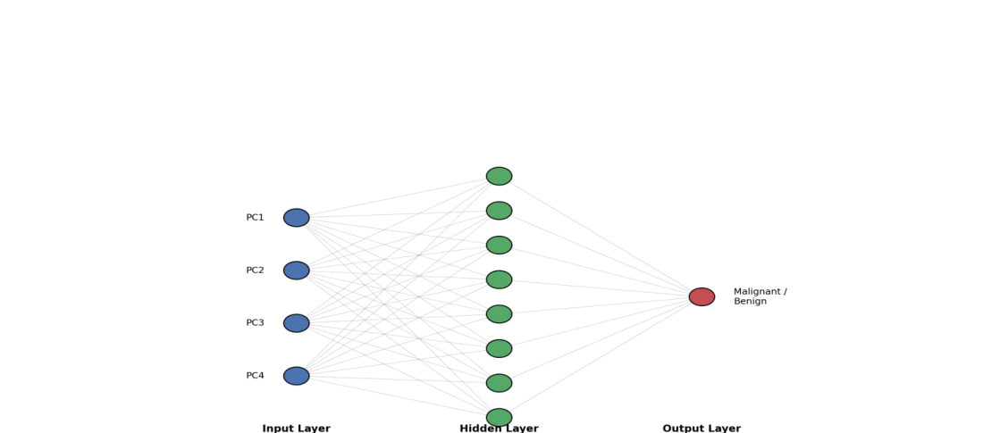
<figcaption class="paper-figure-caption"><b>Fig 2.</b> Fig. 2. The classical Multi-Layer Perceptron (MLP) has 4 input neurons (PCA components), 8 fully-connected hidden</figcaption>
</figure>
<figure class="paper-figure-card">
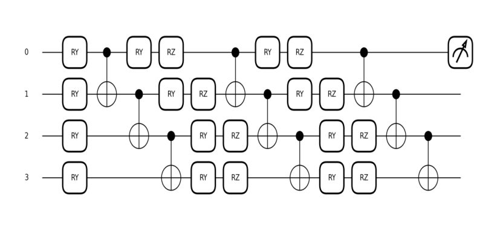
<figcaption class="paper-figure-caption"><b>Fig 3.</b> Fig. 3. Quantum circuit diagram of the Variational Quantum Classifier: 4-qubit angle-encoding feature map followed</figcaption>
</figure>
<figure class="paper-figure-card">
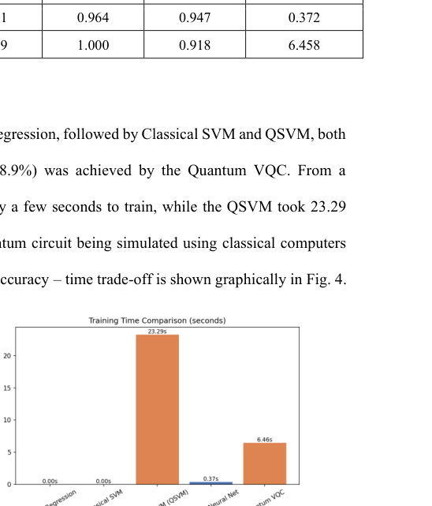
<figcaption class="paper-figure-caption"><b>Fig 4.</b> Fig. 4. A comparison of accuracy (left) and training time (right) for all five models.</figcaption>
</figure>
<figure class="paper-figure-card">
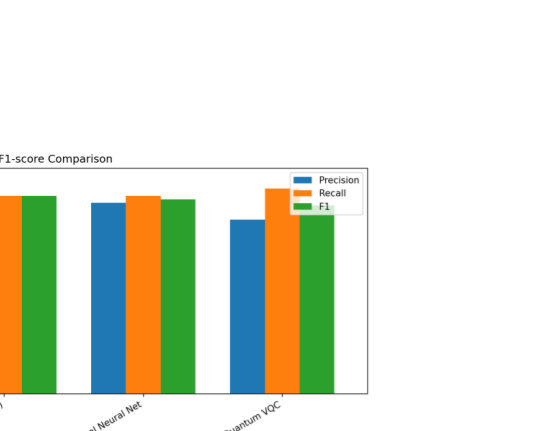
<figcaption class="paper-figure-caption"><b>Fig 5.</b> Fig. 5. Comparison of results for Precision, Recall, and F1-score for all of the five models.</figcaption>
</figure>
</div>
<p><strong>Summary.</strong> This paper compares Variational Quantum Classifiers (VQC) and Quantum Kernel SVM (QSVM) against classical ML models on a diagnostic dataset. While quantum models showed some competitive performance in specific metrics, they were significantly slower to train and less accurate than classical baselines. The study concludes that quantum advantage is not yet demonstrated for small, structured datasets.</p>
<p><strong>Why it may be interesting.</strong> Although the focus is ML, the comparison highlights the current overhead and performance gap between NISQ-era quantum simulations and classical ML benchmarks, which is a key topic in quantum computation feasibility studies.</p>
<details>
<summary>Detailed structure</summary>
<p><strong>Main problem.</strong> The paper comparatively studies the performance of Quantum Machine Learning (QML) models against established classical Machine Learning (ML) models for binary classification.</p>
<p><strong>Main result.</strong> On a small, structured dataset, classical models, particularly Logistic Regression, significantly outperformed the quantum classifiers in terms of overall accuracy and computational efficiency.</p>
<p><strong>Method.</strong> The study involved training and testing VQC and QSVM quantum models alongside classical counterparts (LR, SVM, MLP) using the Breast Cancer Wisconsin dataset.</p>
<p><strong>Model / system.</strong> The quantum models utilized 4-qubit circuits simulated on a classical backend using PennyLane, featuring angle-encoding feature maps and variational ansatz layers. Classical models were trained on PCA-reduced features.</p>
<p><strong>Key observables.</strong> Accuracy (best: 97.8% for LR), Recall (Malignant Class: LR/SVM/QSVM at 94.1% vs VQC at 70.6%), and Training Time (Classical: &lt;0.01s vs QSVM: 23.29s).</p>
<p><strong>Important parameters / regimes.</strong> The comparison was performed on a small, structured dataset (Breast Cancer Wisconsin) using 4 principal components.</p>
<p><strong>Assumptions / limitations.</strong> The quantum circuits were simulated entirely on a classical backend, meaning the results do not reflect performance on actual quantum hardware.</p>
<p><strong>Figures summary.</strong> Figures illustrate the MLP architecture, the VQC quantum circuit diagram, and comparisons of performance metrics like accuracy, recall, and training time across all five models.</p>
<p><strong>Paper structure.</strong> The paper follows a comparative structure, detailing the setup (dataset, feature reduction), presenting the architectures of both quantum and classical models, and concluding with a quantitative comparison of performance metrics.</p>
</details>
<details>
<summary>Abstract</summary>
<p>A potential path forward is Quantum Machine Learning (QML), which aims to leverage quantum computing in conjunction with classical machine learning to enhance computing efficiency and the expressiveness of models. In this paper, two different quantum classifiers - Variational Quantum Classifier (VQC) and Quantum Kernel Support Vector Machine (QSVM) - are compared with three classical classifiers as baseline classifiers - Logistic Regression, Support Vector Machine (SVM), and a Multi-Layer Perceptron (MLP) - on the Breast Cancer Wisconsin dataset. The quantum circuits were created in the PennyLane framework and simulated on a classical backend. However, in terms of accuracy, classical Logistic Regression performed better with an accuracy of 97.8%, classical SVM and QSVM with an accuracy of 95.6% each, although the Quantum VQC achieved a lower accuracy of 88.9% and had a recall of 100% for the benign class, though it correctly identified only 12 of the 17 malignant cases (a malignant-class recall of approximately 70.6%). The drawback of quantum models is the higher training time; however, since the quantum circuit needs to be classically simulated, the quantum SVM took 23.29 seconds compared to less than 0.01 seconds for the classical linear models. These results indicate that for small structured datasets, classifiers based on quantum computing have not yet surpassed well-tuned classical counterparts. In some respects (e.g., benign-class recall), they perform competitively, though not on malignant-class recall, where the VQC in particular performed worse than the classical baselines, which is worth further investigation on real quantum computers.</p>
</details>
<p><sub><a href="#top">↑ back to top</a></sub></p>

<p><a id="paper-2609.22728"></a></p>
<h3 id="concatenated-composite-pulses-beyond-local-residual-error-preservation"><a href="http://arxiv.org/abs/2609.22728v1">Concatenated Composite Pulses Beyond Local Residual-Error Preservation</a></h3>
<p><strong>Authors:</strong> Masamitsu Bando<br>
<strong>Type:</strong> theory · <strong>Category:</strong> quantum information and computing · <strong>PDF:</strong> <a href="https://arxiv.org/pdf/2609.22728v1">https://arxiv.org/pdf/2609.22728v1</a><br>
<strong>Analysis basis:</strong> full PDF text, analyzed in chunks</p>
<div class="figure-strip-hint">↔ Scroll figures horizontally</div>
<div class="paper-figures-scroll">
<figure class="paper-figure-card">
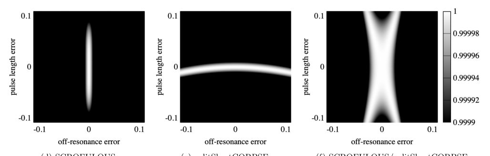
<figcaption class="paper-figure-caption"><b>Fig 1.</b> FIG. 1. Trace fidelity F of Eq. (52) for the target R(π, 0) under the simultaneous-error model of Eq. (49). The horizontal and vertical axes are ORE f and PLE ε, respectively, both ranging from −0.1 to 0.1 in steps of 0.001, giving a 201 × 201 grid in every panel. Concatenation labels follow the inner/outer convention. All six panels share the grayscale shown at the right of each row: black denotes F ≤0.9999 and white denotes F = 1. In (c), split BB1 consists of five π pulses. In (e) and (f), short CORPSE is split into seven pulses of angle π/3; in (f), each is replaced by SCROFULOUS, giving 21 elementary pulses before merging.</figcaption>
</figure>
</div>
<p><strong>Summary.</strong> This paper develops advanced theory for designing concatenated composite pulses to maintain high fidelity against multiple systematic errors in quantum control. It shows that perfect local error cancellation is overly restrictive, deriving a global condition that must be met instead. This allows for the construction of robust quantum gates using inner pulses that only need to scale the elementary error generators by a common factor.</p>
<p><strong>Why it may be interesting.</strong> It provides advanced, rigorous theoretical tools for designing high-fidelity quantum gates in physical platforms like NMR, extending the known limits of error correction beyond simple local error cancellation.</p>
<details>
<summary>Detailed structure</summary>
<p><strong>Main problem.</strong> The paper addresses the challenge of designing concatenated composite pulses that can compensate for multiple systematic control errors without relying on the strict condition of Local Residual-Error Preservation (REP).</p>
<p><strong>Main result.</strong> It proves that local REP is not necessary, establishing a global necessary and sufficient condition for robustness, and provides a simple sufficient construction principle based on a common real scaling factor for inner pulses.</p>
<p><strong>Method.</strong> The authors use first-order error generators derived from Taylor expansions of unitary operations to derive and analyze the global error composition rules for concatenated sequences.</p>
<p><strong>Model / system.</strong> The model is based on quantum operations, specifically single-qubit gates in the context of magnetic resonance, subjected to systematic errors like Pulse Length Errors (PLE) and Off-Resonance Errors (ORE).</p>
<p><strong>Key observables.</strong> Error generators ($K_x[U]$), the Global REP condition ($\sum P_{j-1}^\dagger \Delta K_{x,j} P_{j-1} = 0$), and the common proportionality factor ($q$).</p>
<p><strong>Important parameters / regimes.</strong> Systematic error parameters ($\epsilon$ for PLE, $f$ for ORE), and the rotation angles/pulses used in the construction.</p>
<p><strong>Assumptions / limitations.</strong> The analysis is restricted to first-order error terms and assumes fixed systematic error parameters across the sequence.</p>
<p><strong>Figures summary.</strong> Figure 1 illustrates fidelity maps for various concatenated constructions (e.g., CORPSE/SCROFULOUS) across the error parameter space, while Table I summarizes the cost (pulse count and total angle) for specific constructions.</p>
<p><strong>Paper structure.</strong> The paper progresses by first defining error generators and local REP, then deriving the necessary and sufficient global REP condition, and finally proposing and illustrating the simple sufficient condition using explicit constructions for PLE and ORE compensation.</p>
</details>
<details>
<summary>Abstract</summary>
<p>Residual-error preservation (REP) provides a sufficient rule for constructing concatenated composite pulses that compensate multiple systematic errors. We show that local REP is not necessary: deviations from REP can cancel across the full sequence. Using first-order error generators, we derive a necessary and sufficient condition for concatenation to retain the robustness of an outer sequence. A simple sufficient condition is that all inner pulses rescale the corresponding elementary error generators by a common real factor, not necessarily unity. We illustrate this principle using pulse-length and off-resonance errors, two systematic error models commonly considered in magnetic resonance. Short CORPSE and SCROFULOUS each compensate one error without preserving the other locally. Combining these inner pulses with suitable equal-rotation-angle outer sequences yields simultaneous first-order compensation of both errors, extending concatenated composite-pulse design beyond local REP.</p>
</details>
<p><sub><a href="#top">↑ back to top</a></sub></p>

<p><a id="paper-2609.25000"></a></p>
<h3 id="dont-mind-the-gap-absolutely-continuous-edge-spectrum-in-a-mobility-gap"><a href="http://arxiv.org/abs/2609.25000v1">Don't mind the gap: Absolutely Continuous Edge Spectrum in a Mobility Gap</a></h3>
<p><strong>Authors:</strong> Simon Becker, Mengxuan Yang<br>
<strong>Type:</strong> theory · <strong>Category:</strong> disordered systems and neural networks · <strong>PDF:</strong> <a href="https://arxiv.org/pdf/2609.25000v1">https://arxiv.org/pdf/2609.25000v1</a><br>
<strong>Analysis basis:</strong> full PDF text, analyzed in chunks</p>
<div class="figure-strip-hint">↔ Scroll figures horizontally</div>
<div class="paper-figures-scroll">
<figure class="paper-figure-card">
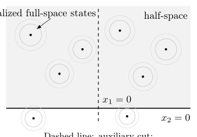
<figcaption class="paper-figure-caption"><b>Fig 1.</b> Figure 1. Geometry and spectral conclusion of Theorem 1.1. (a) The solid horizontal line is the boundary of the upper half-space and the dashed vertical line is the auxiliary cut used in the index construction. Dots and rings indicate localization centers and localized full-space eigenfunctions. (b) The same interval ∆is shown for the full-space operator H and the half-space operator bH. Localized full-space spectrum may occur in ∆, whereas a nonzero index C forces an absolutely continuous component of bH with mac(E; bH) ≥|C| for almost every E ∈∆. The ticks are schematic and do not represent isolated eigenvalues; additional singular spectrum is not excluded.</figcaption>
</figure>
</div>
<p><strong>Summary.</strong> This theoretical paper establishes a deep link between bulk topology and edge spectrum for lattice Hamiltonians in a mobility gap. By using index theory, the authors prove that a constant, non-zero bulk topological index guarantees a minimum, non-zero absolutely continuous spectral multiplicity on the corresponding half-space operator. This is crucial for understanding robust edge states in disordered or gapped quantum systems.</p>
<p><strong>Why it may be interesting.</strong> The connection between topological invariants (like the index) and the spectral structure (like $\sigma_{ac}$) is fundamental in modern condensed matter theory, particularly for understanding edge states in topological insulators.</p>
<details>
<summary>Detailed structure</summary>
<p><strong>Main problem.</strong> The paper investigates whether a non-zero bulk topological index in a mobility gap forces the existence of an absolutely continuous spectrum in the corresponding half-space Hamiltonian.</p>
<p><strong>Main result.</strong> It proves that if the bulk topological index is a non-zero constant over an interval, the absolutely continuous spectral multiplicity of the half-space operator is bounded below by the absolute value of that index for almost every energy in the interval.</p>
<p><strong>Method.</strong> The proof utilizes advanced index theory (Fredholm index) and unitary scattering theory, constructing an auxiliary-space cut to transfer bulk topological information to the physical half-space spectrum.</p>
<p><strong>Model / system.</strong> The analysis applies to two-dimensional lattice Hamiltonians and magnetic Schrödinger operators, considering both discrete ($\ell^2(\mathbb{Z}^2)$) and continuous ($L^2(\mathbb{R}^2)$) settings.</p>
<p><strong>Key observables.</strong> Absolutely continuous spectral multiplicity ($ ext{mac}(E; bH)$) and the bulk topological index ($C$).</p>
<p><strong>Important parameters / regimes.</strong> The existence of a 'mobility gap' (an energy interval where the bulk spectrum is potentially localized) and the constancy of the bulk index $C$ over an interval $\Delta$.</p>
<p><strong>Assumptions / limitations.</strong> The theorem requires suitable localization and boundary assumptions (e.g., (D1)-(D4) or (C1)-(C4)).</p>
<p><strong>Figures summary.</strong> Figure 1 illustrates the geometry, comparing the auxiliary cut to the physical boundary and showing the forced absolutely continuous component in the half-space spectrum.</p>
<p><strong>Paper structure.</strong> The paper builds from general index theory (Section 2.2) to establishing a key lemma linking the index to the minimum absolutely continuous multiplicity (Lemma 2.2), culminating in the main theorem (Theorem 1.1) which applies the index machinery to the half-space operator.</p>
</details>
<details>
<summary>Abstract</summary>
<p>We study the edge spectrum of two-dimensional lattice Hamiltonians and magnetic Schrödinger operators in a mobility gap, an energy interval in which the bulk spectrum is potentially localized rather than necessarily absent. Under suitable localization and boundary assumptions, we prove that a constant nonzero bulk topological index implies that the entire interval belongs to the absolutely continuous spectrum of the corresponding half-space operator. The absolutely continuous spectral multiplicity is bounded below by the absolute value of the index at almost every energy in the interval. The first version of the auxiliary-space cut construction in Section 2.3 was generated using ChatGPT 6.</p>
</details>
<p><sub><a href="#top">↑ back to top</a></sub></p>

<p><a id="paper-2609.23353"></a></p>
<h3 id="eigenvalue-by-eigenvalue-comparison-of-a-sierra-rodriguez-laguna-type-spectrum-with-the-riemann-zeros"><a href="http://arxiv.org/abs/2609.23353v1">Eigenvalue-by-Eigenvalue Comparison of a Sierra--Rodríguez-Laguna-Type Spectrum with the Riemann Zeros</a></h3>
<p><strong>Authors:</strong> Mi-Ra Hwang, Eylee Jung, MuSeong Kim, DaeKil Park<br>
<strong>Type:</strong> theory · <strong>Category:</strong> other · <strong>PDF:</strong> <a href="https://arxiv.org/pdf/2609.23353v1">https://arxiv.org/pdf/2609.23353v1</a><br>
<strong>Analysis basis:</strong> full PDF text, analyzed in chunks</p>
<div class="figure-strip-hint">↔ Scroll figures horizontally</div>
<div class="paper-figures-scroll">
<figure class="paper-figure-card">
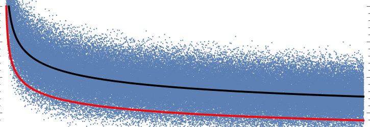
<figcaption class="paper-figure-caption"><b>Fig 1.</b> FIG. 2. (Color online) dn = eEn −γn for the first 105 zeta zeros (blue dots). Red curve: naive</figcaption>
</figure>
</div>
<p><strong>Summary.</strong> This paper compares the discrete energy spectrum of a specific quantum Hamiltonian (SR model) against the imaginary parts of the non-trivial zeros of the Riemann zeta function. By rigorously analyzing the asymptotic behavior and correcting for counting function conventions, the authors achieve an extremely precise match between the theoretical prediction and high-precision numerical data. This strengthens the physical interpretation of the Riemann zeros as eigenvalues of some underlying quantum operator.</p>
<p><strong>Why it may be interesting.</strong> This work represents a deep, non-perturbative connection between spectral theory in quantum mechanics and fundamental constants/functions in number theory, which is a major theme in mathematical physics.</p>
<details>
<summary>Detailed structure</summary>
<p><strong>Main problem.</strong> The paper investigates the deep connection between the discrete eigenvalues of a specific quantum Hamiltonian and the non-trivial zeros of the Riemann zeta function, testing the Hilbert–Pólya conjecture.</p>
<p><strong>Main result.</strong> The authors successfully derived a corrected theoretical prediction for the difference between the eigenvalues and the zeta zeros, matching high-precision numerical data (Odlyzko's zeros) to within 0.03%.</p>
<p><strong>Method.</strong> The analysis combines solving a transcendental equation derived from the Hamiltonian's self-adjoint extension with advanced asymptotic methods (steepest-descent) and rigorous number theory formulas (Riemann-von Mangoldt).</p>
<p><strong>Model / system.</strong> The system is governed by the Sierra–Rodríguez-Laguna (SR) Hamiltonian, $H_{SR} = x(p + \ell^2/p)$, whose spectrum is determined by a condition involving the modified Bessel function $K_{
u}(2\pi)$.</p>
<p><strong>Key observables.</strong> The primary observables are the eigenvalues $E_n$ from the quantum model and the ordinates $\gamma_n$ of the Riemann zeta zeros; the key diagnostic is the difference $E_n - \gamma_n$.</p>
<p><strong>Important parameters / regimes.</strong> The analysis is performed for $ heta = 1.417\pi$, and the comparison is made up to $n=606$ and $n=10^5$.</p>
<p><strong>Assumptions / limitations.</strong> The analysis critically assumes that any discrepancy between the theoretical prediction and the data must originate from the precise treatment of the counting function $N(T)$ at the zeros, leading to a necessary correction in the effective quantum number.</p>
<p><strong>Figures summary.</strong> Figure 1 compares $E_n$ vs. $\gamma_n$ and $E_n - \gamma_n$ for the first 606 points. Figure 2 plots the measured difference $d_n = eE_n - \gamma_n$ for $10^5$ zeros, comparing naive and corrected theoretical fits.</p>
<p><strong>Paper structure.</strong> The paper first establishes the quantization condition for the SR Hamiltonian. It then uses asymptotic methods to derive a closed-form prediction for $E_n$. The core of the work involves comparing this prediction to the known asymptotic behavior of the Riemann zeros, identifying a necessary correction in the counting function $N(T)$ to achieve quantitative agreement.</p>
</details>
<details>
<summary>Abstract</summary>
<p>We study the self-adjoint extension of the Sierra--Rodríguez-Laguna (SR) $H=xp$-type Hamiltonian $\widehat H_{SR}$. Its discrete spectrum is fixed by the equation $\mathrm{Re}\!\left[e^{-iθ/2}K_{1/2+iE/2}(2π)\right]=0$. We solve this equation numerically for $θ=1.417π$ and obtain the first 606 eigenvalues $E_n$. We compare them, one by one, with the ordinates $γ_n$ of the first 606 nontrivial zeros of the Riemann zeta function. Using the steepest-descent (saddle-point) method for the modified Bessel function, together with the Riemann--von Mangoldt formula, we derive a closed-form prediction for $E_n-γ_n$ in terms of the Lambert-$W$ function. We show that our leading-order phase for $K_{1/2+iE/2}(2π)$ matches exactly a known, rigorous asymptotic formula for modified Bessel functions of large imaginary order. This rules out the Bessel function as the source of a numerical mismatch we found earlier. We then trace that mismatch to how the counting function $N(T)$ must be treated exactly at $T=γ_n$: the usual midpoint convention for the fluctuating term $S(T)$ shifts the effective quantum number by $1/2$. With this fix, $γ_n\sim g(n-11/8)$ instead of $g(n-7/8)$, and the new prediction for $E_n-γ_n$ matches, to within $0.03\%$, the value we measure directly from the first $10^5$ tabulated zeta zeros (A.~Odlyzko).</p>
</details>
<p><sub><a href="#top">↑ back to top</a></sub></p>

<p><a id="paper-2609.24281"></a></p>
<h3 id="electronic-entropy-driven-phase-transitions-in-compressed-iron-oxides"><a href="http://arxiv.org/abs/2609.24281v1">Electronic-Entropy-Driven Phase Transitions in Compressed Iron Oxides</a></h3>
<p><strong>Authors:</strong> S. Azadi, S. M. Vinko, C. Crepisson, A. Principi, T. D. Kuehne, M. S. Bahramy<br>
<strong>Type:</strong> theory · <strong>Category:</strong> statistical mechanics · <strong>PDF:</strong> <a href="https://arxiv.org/pdf/2609.24281v1">https://arxiv.org/pdf/2609.24281v1</a><br>
<strong>Analysis basis:</strong> full PDF text, analyzed in chunks</p>
<div class="figure-strip-hint">↔ Scroll figures horizontally</div>
<div class="paper-figures-scroll">
<figure class="paper-figure-card">
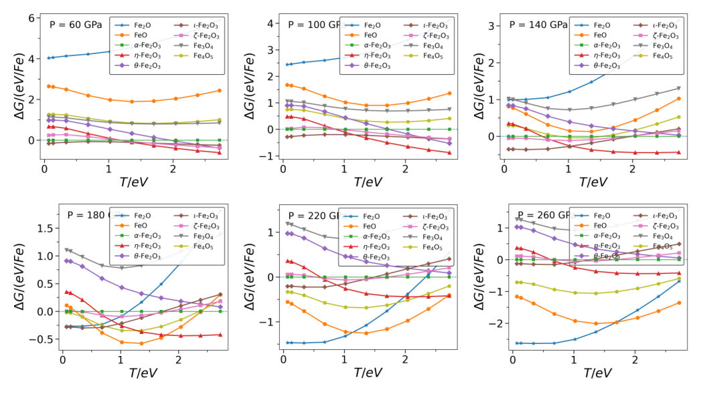
<figcaption class="paper-figure-caption"><b>Fig 1.</b> FIG. 1. Relative Gibbs free energy ∆G of Fe2O, FeO, Fe4O5, Fe3O4, and Fe2O3 polymorphs as a function of electronic temperature T at fixed pressures of 60, 100, 140, 180, 220, and 260 GPa. The reference phase is α-Fe2O3, so its free energy is set to zero in each panel. All free energies are expressed in eV/Fe (eV per Fe atom) on a common formation-free-energy scale (see text). At 60–140 GPa, the lowest-free-energy phase changes from ι-Fe2O3 to η-Fe2O3 with increasing T, showing an electronic-entropy-driven polymorphic transition within Fe2O3. At 180 GPa, FeO becomes stabilized over an intermediate temperature window before η-Fe2O3 becomes favourable at higher T. At 220–260 GPa, Fe2O is the...</figcaption>
</figure>
<figure class="paper-figure-card">
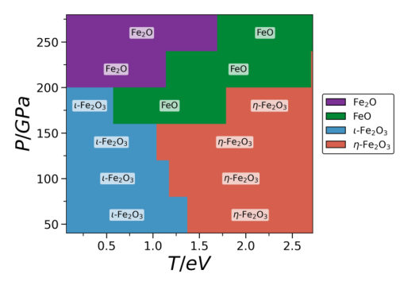
<figcaption class="paper-figure-caption"><b>Fig 2.</b> FIG. 2. Pressure-temperature phase map showing the lowest Gibbs free-energy phase among the Fe-O structures considered in this work. The horizontal axis is the electronic temperature T/eV, and the verti- cal axis is pressure P/GPa. At each (P,T) point, the stable phase is identified by comparing the formation Gibbs free energies of Fe2O, FeO, Fe4O5, Fe3O4, and the α-, ι-, ζ-, η-, and θ-Fe2O3 poly- morphs on the same eV/Fe (eV per Fe atom) formation-free-energy scale. The colour of each region denotes the phase with the lowest Gibbs free energy within this candidate set. The map shows a sys- tematic evolution from Fe2O3-polymorph stability at lower pressures to Fe-rich oxide stability at...</figcaption>
</figure>
</div>
<p><strong>Summary.</strong> This theoretical work uses finite-temperature DFT to show that electronic entropy is a major thermodynamic driver for phase changes in compressed iron oxides. By calculating the Gibbs free energy across varying pressures and electronic temperatures, the authors map out phase boundaries that govern transitions between different crystal structures and stoichiometries. This work provides a computational route to predict non-thermal structural transformations relevant to high-energy-density experiments.</p>
<p><strong>Why it may be interesting.</strong> The explicit inclusion of electronic entropy as a primary thermodynamic variable provides a framework for understanding non-equilibrium phase transitions in extreme matter, which is relevant to understanding energy deposition and material stability in high-energy physics contexts.</p>
<details>
<summary>Detailed structure</summary>
<p><strong>Main problem.</strong> The study investigates how electronic entropy can act as a primary thermodynamic driving force, controlling both polymorphic and stoichiometric phase transformations in compressed iron oxides.</p>
<p><strong>Main result.</strong> Electronic entropy dictates phase stability across different pressures and electronic temperatures, causing transitions like $\iota-	ext{Fe}_2	ext{O}_3 
ightarrow \eta-	ext{Fe}_2	ext{O}_3$ and altering the balance between $   ext{Fe}_2   ext{O}$ and $   ext{FeO}$ at high compression.</p>
<p><strong>Method.</strong> The authors employ finite-temperature density functional theory (FT-DFT) to calculate the electronic-temperature-dependent Gibbs free energies of various iron oxide polymorphs.</p>
<p><strong>Model / system.</strong> The system under study is a set of iron oxides ($   ext{Fe}_x   ext{O}_y$), including multiple polymorphs of $  ext{Fe}_2   ext{O}_3$, compressed across pressures up to 260 GPa. The calculations model the system in a two-temperature regime where electronic excitation is significant.</p>
<p><strong>Key observables.</strong> Formation Gibbs free energy, $G_{	ext{form}}(P,T)$, and the relative stability of different iron oxide phases.</p>
<p><strong>Important parameters / regimes.</strong> Pressure range of 60–260 GPa and electronic temperature ($T$) up to several eV.</p>
<p><strong>Assumptions / limitations.</strong> The analysis uses FT-DFT, treating the electronic subsystem via a Fermi-Dirac distribution, and neglects explicit magnetic order or Hubbard corrections.</p>
<p><strong>Figures summary.</strong> The notes refer to a pressure-temperature phase map (Fig. 2) illustrating the lowest Gibbs free-energy phase among the considered Fe-O structures.</p>
<p><strong>Paper structure.</strong> The paper systematically calculates and compares the Gibbs free energies of multiple iron oxide polymorphs across varying pressures and electronic temperatures, identifying the phase boundaries where electronic entropy drives transitions.</p>
</details>
<details>
<summary>Abstract</summary>
<p>Electronic entropy is usually treated as a secondary correction to structural stability, but under strong electronic excitation it can become a primary thermodynamic driving force. Here we show that electronic entropy can drive both polymorphic and stoichiometric phase transformations in compressed iron oxides. Using finite-temperature density functional theory, we calculate the electronic-temperature-dependent Gibbs free energies of Fe$_2$O, FeO, Fe$_4$O$_5$, Fe$_3$O$_4$, and multiple Fe$_2$O$_3$ polymorphs, including $α$-, $ι$-, $ζ$-, $η$-, and $θ$-Fe$_2$O$_3$, over the pressure range 60--260 GPa. At 60-140 GPa, electronic excitation mainly reorganizes the relative stability of Fe$_2$O$_3$ polymorphs, driving transitions from $ι$-Fe$_2$O$_3$ to $η$-Fe$_2$O$_3$. At 180 GPa, the free-energy landscape becomes strongly competitive as FeO is stabilized over an intermediate range of electronic temperature, while $η$-Fe$_2$O$_3$ becomes favourable at higher T. At 220-260 GPa, the lowest-free-energy phase at low T is the Fe-rich compound Fe$_2$O, but increasing electronic temperature stabilizes FeO. These results demonstrate that electronic entropy can control not only the relative stability of crystal structures at fixed composition, but also the competition between different iron-oxide stoichiometries. The predicted electronic-entropy-driven phase boundaries provide a route to nonthermal structural transformations in ultrafast and high-energy-density experiments.</p>
</details>
<p><sub><a href="#top">↑ back to top</a></sub></p>

<p><a id="paper-2609.23441"></a></p>
<h3 id="entanglement-cost-of-optimal-distributed-quantum-state-purification"><a href="http://arxiv.org/abs/2609.23441v1">Entanglement Cost of Optimal Distributed Quantum State Purification</a></h3>
<p><strong>Authors:</strong> Jiayi Zhao, Chengkai Zhu, Xin Wang, Ge Bai<br>
<strong>Type:</strong> theory · <strong>Category:</strong> quantum information and computing · <strong>PDF:</strong> <a href="https://arxiv.org/pdf/2609.23441v1">https://arxiv.org/pdf/2609.23441v1</a><br>
<strong>Analysis basis:</strong> full PDF text, analyzed in chunks</p>
<div class="figure-strip-hint">↔ Scroll figures horizontally</div>
<div class="paper-figures-scroll">
<figure class="paper-figure-card">
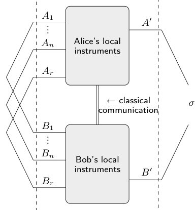
<figcaption class="paper-figure-caption"><b>Fig 1.</b> FIG. 1. Distributed n →1 purification with a preshared resource state. Alice and Bob process n noisy copies together with a finite-dimensional preshared state ωArBr by finite-round LOCC. The trace of the unnormalized output bσψ is the success probability.</figcaption>
</figure>
<figure class="paper-figure-card">
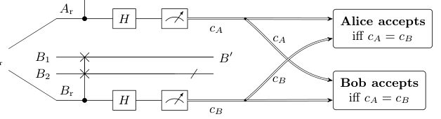
<figcaption class="paper-figure-caption"><b>Fig 2.</b> FIG. 2. Circuit implementation of Algorithm 1. The input consists of two noisy bipartite copies and a preshared resource |Φ2⟩ArBr = (|00⟩+ |11⟩)/ √</figcaption>
</figure>
</div>
<p><strong>Summary.</strong> This theoretical paper quantifies the minimum entanglement resource needed for distributed quantum state purification under noise. It proves that for the optimal two-copy purification task, one shared EPR pair is both sufficient and necessary for local operations and classical communication (LOCC) to match the global optimum. This establishes a crucial benchmark for assessing entanglement demands in quantum networking.</p>
<p><strong>Why it may be interesting.</strong> This work provides a fundamental, quantitative benchmark for resource requirements in quantum communication and quantum computation, directly impacting the design of quantum network protocols and modular quantum computers.</p>
<details>
<summary>Detailed structure</summary>
<p><strong>Main problem.</strong> The paper determines the minimum preshared entanglement required for spatially separated parties to achieve the globally optimal probabilistic two-copy purification of arbitrary bipartite pure states under depolarizing noise.</p>
<p><strong>Main result.</strong> For the optimal purification benchmark, one shared maximally entangled qubit pair (EPR pair) suffices for LOCC protocols, and conversely, any resource achieving this optimum must possess at least one ebit of entanglement.</p>
<p><strong>Method.</strong> The authors use rigorous information-theoretic bounds, comparing achievable LOCC protocols against the optimal global CPTN benchmark, and employing entanglement measures like Entanglement of Formation.</p>
<p><strong>Model / system.</strong> The model involves two spatially separated parties (Alice and Bob) purifying two noisy copies of an arbitrary bipartite pure state ($\psi$) that has undergone independent depolarizing noise. The resource is a finite-dimensional shared entangled state.</p>
<p><strong>Key observables.</strong> Quantum fidelity, Entanglement of Formation (EF), and the achievable purification gain relative to the global optimum $G^\star(D, \gamma)$.</p>
<p><strong>Important parameters / regimes.</strong> Noise strength ($\gamma$), local dimension ($d \ge 2$), and the number of copies ($n=2$).</p>
<p><strong>Assumptions / limitations.</strong> The analysis is restricted to LOCC protocols and focuses on the $2 	o 1$ purification task under depolarizing noise.</p>
<p><strong>Figures summary.</strong> Figure 2 illustrates a specific LOCC protocol using an EPR pair involving controlled swaps and a measurement acceptance condition.</p>
<p><strong>Paper structure.</strong> The paper establishes the problem by defining the purification task and the benchmark. It then proves the sufficiency of one EPR pair for LOCC to match the global optimum, and subsequently proves the necessity by establishing the minimum entanglement cost using entanglement measures and PPT tests.</p>
</details>
<details>
<summary>Abstract</summary>
<p>We determine the preshared entanglement required for spatially separated parties, restricted to local operations and classical communication, to attain globally optimal probabilistic two-copy purification of arbitrary bipartite pure states under depolarizing noise. In every local dimension $d\ge 2$, one shared maximally entangled qubit pair suffices: local controlled-SWAP operations exactly reproduce the globally optimal successful transformation. Conversely, any finite-dimensional preshared resource state that attains the same benchmark, even under a positive-partial-transpose relaxation, must have entanglement of formation at least one ebit. For pure resources with one ebit, or for two-qubit resources including mixed states, attaining the benchmark is possible only for states with exactly two nonzero Schmidt weights, both equal to $1/2$, namely those locally unitarily equivalent to a maximally entangled qubit pair. These findings provide a benchmark for evaluating the entanglement demands of noise management in quantum networks and modular quantum computers.</p>
</details>
<p><sub><a href="#top">↑ back to top</a></sub></p>

<p><a id="paper-2609.24230"></a></p>
<h3 id="fault-class-matched-test-oracles-for-output-invisible-quantum-transpiler-regressions"><a href="http://arxiv.org/abs/2609.24230v1">Fault-Class-Matched Test Oracles for Output-Invisible Quantum Transpiler Regressions</a></h3>
<p><strong>Authors:</strong> Furqan Nasir, Arif Shah, Iftikhar Alam<br>
<strong>Type:</strong> theory · <strong>Category:</strong> quantum information and computing · <strong>PDF:</strong> <a href="https://arxiv.org/pdf/2609.24230v1">https://arxiv.org/pdf/2609.24230v1</a><br>
<strong>Analysis basis:</strong> full PDF text, analyzed in chunks</p>
<div class="figure-strip-hint">↔ Scroll figures horizontally</div>
<div class="paper-figures-scroll">
<figure class="paper-figure-card">

<figcaption class="paper-figure-caption"><b>Fig 1.</b> Figure 1. Overview of the from-source evaluation pipeline: a static manifest and instrumented transpilation, change-event construction under non-pooled cohorts, width- tiered oracle application, and metric computation under six validity gates, resting throughout on a shared reproducibility substrate (a two-layer execution environment, write-once artifacts, calibrated CPU-time costing, a frozen change-stage map, group-level temporal splitting, and a strict claim-scope rule).</figcaption>
</figure>
<figure class="paper-figure-card">
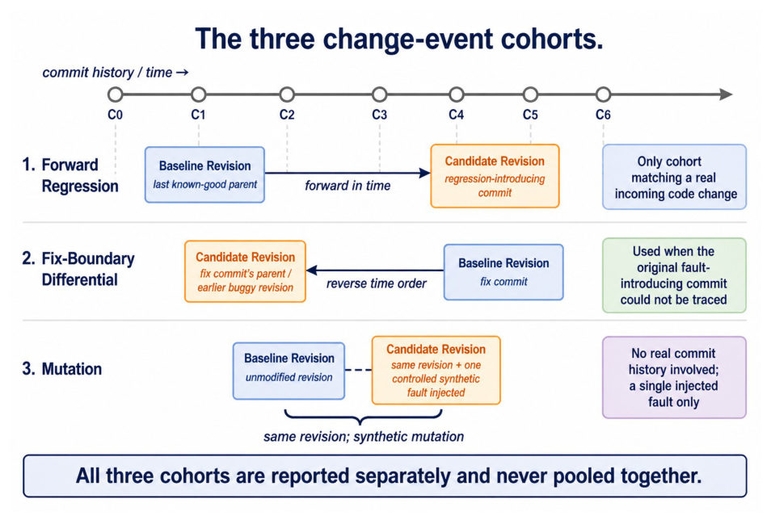
<figcaption class="paper-figure-caption"><b>Fig 2.</b> Figure 2. The three change-event cohorts (forward regression, fix-boundary differential, mutation) and how each pairs a baseline revision with a candidate.</figcaption>
</figure>
</div>
<p><strong>Summary.</strong> This paper introduces a novel family of test oracles designed to test quantum transpilers for faults that do not alter the final observable output. By checking internal metadata, global phase, and determinism separately, the authors create a much more comprehensive and computationally cheap testing suite. This work significantly improves the reliability guarantees for quantum compilation toolchains.</p>
<p><strong>Why it may be interesting.</strong> While focused on software testing, the rigorous analysis of internal state consistency (metadata, phase) mirrors the need for robust error detection in complex quantum hardware control and simulation pipelines.</p>
<details>
<summary>Detailed structure</summary>
<p><strong>Main problem.</strong> Developing robust test oracles for quantum transpilers that can detect faults invisible to standard black-box output-equivalence checks.</p>
<p><strong>Main result.</strong> The proposed family of fault-class-matched oracles successfully detects internal metadata, global phase, and reproducibility faults that standard output checks miss on real-world transpiler regressions.</p>
<p><strong>Method.</strong> The authors developed targeted oracles—including a contract checker, a metamorphic relation for metadata, and a global-phase tracker—to inspect internal compiler bookkeeping rather than just the final output.</p>
<p><strong>Model / system.</strong> The system involves quantum circuits that undergo transpilation (optimization and mapping) by quantum compilers like Qiskit or pytket for execution on quantum hardware.</p>
<p><strong>Key observables.</strong> Fault detection status (pass/fail) for metadata (layout/permutation), global phase accumulation, and run-to-run determinism.</p>
<p><strong>Important parameters / regimes.</strong> The cost of the new oracles relative to plain output checks (orders of magnitude cheaper); sensitivity and specificity (reported as 1.00).</p>
<p><strong>Assumptions / limitations.</strong> The standard output-equivalence oracle is inherently blind to faults corrupting internal, non-observable metadata channels.</p>
<p><strong>Paper structure.</strong> The paper first identifies the limitation of output-equivalence testing, then introduces and details the three fault-class-matched oracles (contract/metadata, global-phase, determinism), validates them against real transpiler regressions, and finally analyzes their computational cost and portability.</p>
</details>
<details>
<summary>Abstract</summary>
<p>Test oracles for quantum transpilers typically judge correctness by comparing compiled output against a reference: a statevector, a sampled distribution, or a unitary compared modulo global phase. A companion empirical study measures how often that choice fails. Roughly 28% of merged Qiskit transpiler bug-fixes (95% Wilson CI 19-40%) repair a fault that corrupts layout metadata, global phase, or run-to-run reproducibility while output stays correct: invisible to a black-box output-equivalence oracle by construction. This paper closes that gap with a fault-class-matched, layout-aware, width-tiered oracle family: a layout/permutation contract checker and a contract-level metamorphic relation (MR-1) for the metadata channel, a global-phase tracker for the phase channel, and a determinism runner for reproducibility. Verified from source on nine real, merged Qiskit transpiler regressions (three per channel), the output-equivalence oracle is blind throughout and the matched mechanism fires on every case. A 675-configuration sweep of the contract/metadata invariant finds no false positive. Synthetic mutant families confirm reliability at scale: 1.00 sensitivity and specificity across 36 mutants apiece for the contract/metadata and global-phase channels, and 1.00 sensitivity (95% CI 0.44-1.00) for reproducibility on the three circuits where the mutation is constructible. The contract checker costs two to six orders of magnitude less than a plain output check, the global-phase tracker is comparably cheap within its exact tier, and only the metamorphic relation carries a bounded cost. Ported natively to pytket/tket, the global-phase mechanism transfers cleanly, an identical 1.00/1.00 result with phases recovered to double-precision accuracy, evidence against a Qiskit-specific artifact.</p>
</details>
<p><sub><a href="#top">↑ back to top</a></sub></p>

<p><a id="paper-2609.23348"></a></p>
<h3 id="field-modified-quantum-potentials-from-tridiagonal-representations-analytical-spectra-and-galerkin-simulations"><a href="http://arxiv.org/abs/2609.23348v1">Field-Modified Quantum Potentials from Tridiagonal Representations: Analytical Spectra and Galerkin Simulations</a></h3>
<p><strong>Authors:</strong> Tunde Joseph Osunmusanmi, Berihu Teklu<br>
<strong>Type:</strong> theory · <strong>Category:</strong> other · <strong>PDF:</strong> <a href="https://arxiv.org/pdf/2609.23348v1">https://arxiv.org/pdf/2609.23348v1</a><br>
<strong>Analysis basis:</strong> full PDF text, analyzed in chunks</p>
<div class="figure-strip-hint">↔ Scroll figures horizontally</div>
<div class="paper-figures-scroll">
<figure class="paper-figure-card">
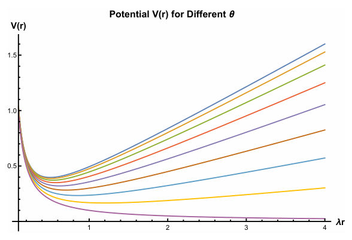
<figcaption class="paper-figure-caption"><b>Fig 1.</b> Figure 1: Graph for the potential function V (r) Eq 18 with λ = 1, E = 2.0, q = 0.2, C = cos θ, and u0 = 0.2. The vertical axis is in a dimensionless scaled energy unit, and the horizontal axis is in a dimensionless radial coordinate unit.</figcaption>
</figure>
<figure class="paper-figure-card">
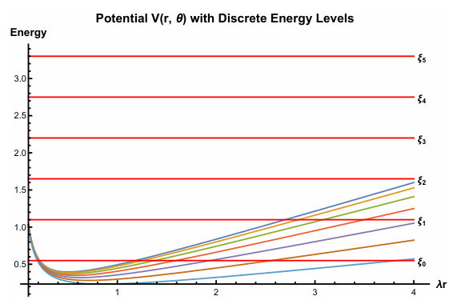
<figcaption class="paper-figure-caption"><b>Fig 2.</b> Figure 2: Graph of the potential function V (r) Eq 18 and the energy spectrum ξk Eq 24. Same parameter values as figure 1 but here u2 = −0.05, ν = p</figcaption>
</figure>
<figure class="paper-figure-card">
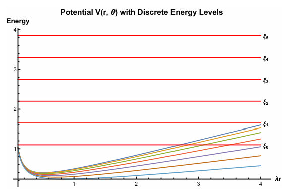
<figcaption class="paper-figure-caption"><b>Fig 3.</b> Figure 3: Graph of the potential function V (r) Eq 18 and the energy spectrum ξk Eq 24.Same parameter values as figure 1 but here u2 = −0.05, ν = p</figcaption>
</figure>
<figure class="paper-figure-card">
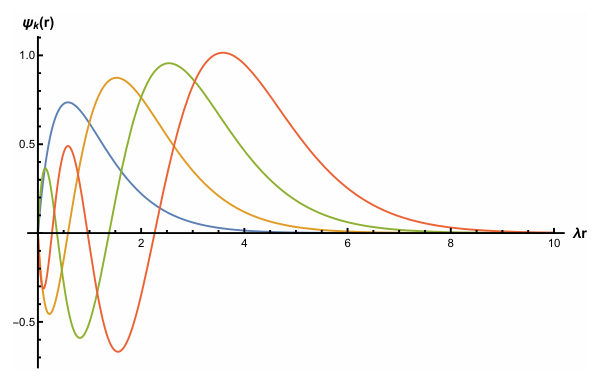
<figcaption class="paper-figure-caption"><b>Fig 4.</b> Figure 4: Graph of the wavefunction ψk (r) for the localized states l = 0 at each energy level ξk Eq 24 where k = 0, 1, 2, 3, .., and θ = 0.6. The vertical axis is dimensionless scaled wavefunction amplitude, and the horizontal axis is in a dimensionless radial coordinate unit.</figcaption>
</figure>
<figure class="paper-figure-card">
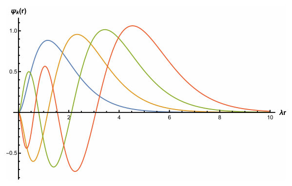
<figcaption class="paper-figure-caption"><b>Fig 5.</b> Figure 5: Graph of the wavefunction ψk (r) for the first angularly excited p-state or dipole like state l = 1 at each energy level ξk Eq 24 where k = 0, 1, 2, 3, .., and θ = 0.6. The vertical axis is dimensionless scaled wavefunction amplitude, and the horizontal axis is in a dimensionless radial coordinate unit.</figcaption>
</figure>
</div>
<p><strong>Summary.</strong> This work develops a rigorous mathematical framework to study quantum potentials modified by external electric and magnetic fields. By employing the Tridiagonal Representation Approach with Laguerre and Jacobi bases, the authors derive new, analytically solvable energy spectra. This provides benchmark models for understanding quantum confinement in complex electromagnetic environments.</p>
<p><strong>Why it may be interesting.</strong> The systematic use of orthogonal polynomial bases (Laguerre, Jacobi) combined with the TRA provides a powerful, generalizable mathematical toolkit for finding exactly solvable models in external field quantum mechanics, which is highly relevant to AMO physics.</p>
<details>
<summary>Detailed structure</summary>
<p><strong>Main problem.</strong> The paper develops an effective radial framework to analyze the quantum mechanical response of a charged particle to combined electric and magnetic fields.</p>
<p><strong>Main result.</strong> It yields new, analytically and numerically tractable energy spectra formulae for field-modified potentials by coupling the analysis to known polynomial structures.</p>
<p><strong>Method.</strong> The core method involves applying the Tridiagonal Representation Approach (TRA) using specialized orthogonal polynomial bases (Laguerre and Jacobi) to solve the resulting effective radial Schrödinger equation.</p>
<p><strong>Model / system.</strong> The model is a nonrelativistic, spinless particle subjected to a central potential $V(r)$ in uniform collinear electric ($\mathbf{E}$) and magnetic ($\mathbf{B}$) fields. The analysis is restricted to an effective radial model via weak-field and angular approximations.</p>
<p><strong>Key observables.</strong> Energy spectra ($  ilde{\xi}$), expansion wavefunctions ($\psi_k(r)$), and the effective potential $V(r)$.</p>
<p><strong>Important parameters / regimes.</strong> The analysis is highly dependent on the weak-field approximation, the smallness condition $\ll \Delta E$, and the specific parameters defining the electric and magnetic fields ($E, B$).</p>
<p><strong>Assumptions / limitations.</strong> The formulation is an effective reduction, not the exact 3D spectrum, and relies on the validity of the weak-field approximation and the angular factor replacement.</p>
<p><strong>Figures summary.</strong> Figures illustrate the field-modified potential $V(r)$ and the resulting energy spectra $\xi_k$ for various angular configurations and angular momentum quantum numbers ($l=0, 1$).</p>
<p><strong>Paper structure.</strong> The paper first establishes the effective radial Hamiltonian under approximations. It then details the application of the TRA using the Laguerre basis (leading to Meixner-Pollaczek structures) and the Jacobi basis (leading to a generalized eigenvalue problem). The structure moves from general Hamiltonian reduction to specific mathematical solutions.</p>
</details>
<details>
<summary>Abstract</summary>
<p>We develop an effective radial framework for analyzing new field-modified potential function of a charged spinless particle in collinear electric and magnetic fields. Using the weak- magnetic field approximation, we neglect the diamagnetic term and other angular projections under an explicit smallness condition $\ll ΔE$, where $E$ is the electric field, and the replacement of the angular factor by $C=\cosθ$ in the spherical coordinates. The resulting equation is therefore a field-aligned radial model whose validity is limited to angularly localized states. Within this setting, we apply the indirect mode (or search mode) of Tridiagonal representation approach in the Laguerre and Jacobi bases. In the Laguerre basis, the tridiagonal constraint generates linear-plus-inverse and linear-plus-quadratic radial potentials, and the coefficient recurrences are connected with Meixner--Pollaczek and Meixner polynomial type structures, therefore yielding the analytic spectra and expansion wavefunctions. In the Jacobi basis, the mapping of the radial half-line to a finite interval produces a singular confining effective potential and a three-term recurrence that is treated through a truncated generalized eigenvalue problem. The formulation provides analytically and numerically tractable benchmark models for field-modified potential functions, while keeping the assumptions, parameter restrictions, endpoint behavior, and convergence tests explicit. All energy spectra formulae obtained under the present models are new and are coupled with magnetic fields analytically and numerically when using the Laguerre bases and the Jacobi bases respectively.</p>
</details>
<p><sub><a href="#top">↑ back to top</a></sub></p>

<p><a id="paper-2609.23756"></a></p>
<h3 id="flow-based-lattice-surgery-optimization-with-runtime-t-gate-scheduling"><a href="http://arxiv.org/abs/2609.23756v1">Flow-Based Lattice Surgery Optimization with Runtime T Gate Scheduling</a></h3>
<p><strong>Authors:</strong> Raymond Iacobacci, Tianyi Hao, Neer Patel, Siyuan Niu<br>
<strong>Type:</strong> theory · <strong>Category:</strong> quantum information and computing · <strong>PDF:</strong> <a href="https://arxiv.org/pdf/2609.23756v1">https://arxiv.org/pdf/2609.23756v1</a><br>
<strong>Analysis basis:</strong> full PDF text, analyzed in chunks</p>
<div class="figure-strip-hint">↔ Scroll figures horizontally</div>
<div class="paper-figures-scroll">
<figure class="paper-figure-card">
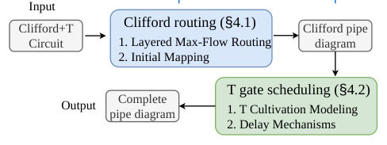
<figcaption class="paper-figure-caption"><b>Fig 1.</b> Figure 1: Overview of our proposed lattice surgery com- piler FlowRouter.</figcaption>
</figure>
<figure class="paper-figure-card">
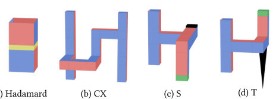
<figcaption class="paper-figure-caption"><b>Fig 2.</b> Figure 3: Pipe diagram realizations of the {𝐻,𝑆, CX,𝑇} gate set.</figcaption>
</figure>
<figure class="paper-figure-card">
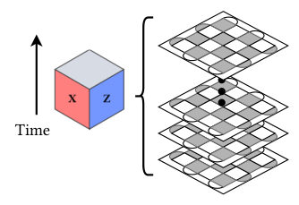
<figcaption class="paper-figure-caption"><b>Fig 3.</b> Figure 2: A surface code patch and the cube represent- ing it in a pipe diagram, with boundary types carried onto the cube faces.</figcaption>
</figure>
<figure class="paper-figure-card">
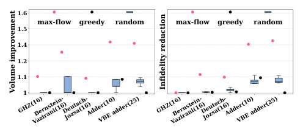
<figcaption class="paper-figure-caption"><b>Fig 4.</b> Figure 4: Strict (bounding box around active cubes) spacetime volume and infidelity at 𝑑= 11 for the same circuits compiled under three embedding strategies: random, greedy, and our max-flow kernel. Metric defi- nitions are given in Section 5. Bernstein-Vazirani(16) and Deutsch-Jozsa(16) are nearly identical to the suite’s respective versions and are sourced from TopoLS; they were chosen to build a square layout. There was no substitute for Adder(10).</figcaption>
</figure>
<figure class="paper-figure-card">
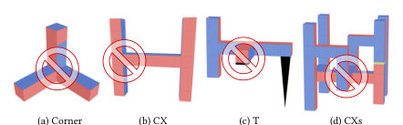
<figcaption class="paper-figure-caption"><b>Fig 5.</b> Figure 6: Four violations of inviolable constraints.</figcaption>
</figure>
</div>
<p><strong>Summary.</strong> This paper introduces FlowRouter, a novel compiler for lattice surgery on the surface code designed to optimize resource usage for fault-tolerant quantum computation. It treats Clifford gate routing and magic state cultivation simultaneously within a 3D embedding, solving the entire layer's routing via a max-flow formulation. This approach yields substantial reductions in required spacetime volume and improves compilation speed over existing state-of-the-art methods.</p>
<p><strong>Why it may be interesting.</strong> While focused on quantum computation, the optimization techniques—especially the use of max-flow to solve complex resource allocation problems in a time-expanded graph—are relevant to resource management in any complex physical system.</p>
<details>
<summary>Detailed structure</summary>
<p><strong>Main problem.</strong> Developing a practical, scalable compiler for lattice surgery on the surface code to minimize the resource cost (spacetime volume) of fault-tolerant quantum computation.</p>
<p><strong>Main result.</strong> The proposed FlowRouter compiler significantly reduces spacetime volume (by 2.3x) and compilation time compared to state-of-the-art methods, even when accounting for realistic magic state cultivation costs.</p>
<p><strong>Method.</strong> It formulates the routing of an entire circuit layer as a maximum-flow problem at compile time, while handling stochastic magic state cultivation (MSC) at runtime within a single 3D embedding.</p>
<p><strong>Model / system.</strong> The system is fault-tolerant quantum computation implemented via lattice surgery on the surface code. The process is modeled using 3D topological pipe diagrams derived from ZX diagrams.</p>
<p><strong>Key observables.</strong> Spacetime volume (resource cost), circuit fidelity, and compilation time.</p>
<p><strong>Important parameters / regimes.</strong> Surface code distance (e.g., distance-13), Clifford and T gate costs, and magic state cultivation parameters.</p>
<p><strong>Assumptions / limitations.</strong> The compiler jointly handles Clifford routing and stochastic magic state cultivation, which previously were treated separately or assumed free.</p>
<p><strong>Figures summary.</strong> Figures illustrate the process flow from input circuits to 3D pipe diagrams, showing the realization of the {H, S, CX, T} gate set and comparing performance metrics.</p>
<p><strong>Paper structure.</strong> The paper introduces FlowRouter, detailing its compile-time max-flow approach for layer routing and its runtime mechanism for magic state cultivation, comparing its performance against existing static and runtime compilers.</p>
</details>
<details>
<summary>Abstract</summary>
<p>Lattice surgery on the surface code is a leading route to fault-tolerant quantum computation. Compiling logical circuits into lattice surgery operations is a pivotal step that determines the resource cost of a computation. Prior compilers build on idealized assumptions, and one that works in practical settings remains to be developed. Existing works are either unscalable or route one gate at a time within a layer, so the embedding depends on the order of gates and opportunities to route many gates at once are lost. In addition, they assume magic states are always available and cost-free, even though preparing one costs more than a Clifford operation.   We present FlowRouter, the first topological lattice surgery compiler that places Clifford routing and stochastic magic state cultivation inside a single 3D embedding. At compile time, FlowRouter formulates the routing of an entire circuit layer as a maximum-flow problem, embedding many gates simultaneously. At runtime, it allows magic states to be cultivated at every idling patch, works with the realistic cultivation process with multiplexing and multi-stage post-selections, and absorbs the stochasticity by introducing delay mechanisms that add as little spacetime volume as possible. With magic states assumed free, FlowRouter reduces spacetime volume by 2.3x and compiles 10.8x faster than the state-of-the-art static topological lattice surgery compiler. With the cultivation-aware setting that includes both Clifford and magic state cost, FlowRouter reduces spacetime volume by 2.3x on a distance-13 surface code when compared with the state-of-the-art runtime compiler.</p>
</details>
<p><sub><a href="#top">↑ back to top</a></sub></p>

<p><a id="paper-2609.22822"></a></p>
<h3 id="from-icecube-to-it-sphere-a-hybrid-quantum-classical-gnn-for-banking-it-root-cause-analysis"><a href="http://arxiv.org/abs/2609.22822v1">From IceCube to IT-Sphere: A Hybrid Quantum-Classical GNN for Banking IT Root Cause Analysis</a></h3>
<p><strong>Authors:</strong> Antonio Greco, Riccardo Paoletti, Roberto Cappuccio, Mario Onorato<br>
<strong>Type:</strong> both · <strong>Category:</strong> quantum information and computing · <strong>PDF:</strong> <a href="https://arxiv.org/pdf/2609.22822v1">https://arxiv.org/pdf/2609.22822v1</a><br>
<strong>Analysis basis:</strong> full PDF text, analyzed in chunks</p>
<div class="figure-strip-hint">↔ Scroll figures horizontally</div>
<div class="paper-figures-scroll">
<figure class="paper-figure-card">

<figcaption class="paper-figure-caption"><b>Fig 1.</b> Fig. 2. HQ-RCA end-to-end workflow: a quantum block (θ→⟨Z0⟩) feeding a classical block (⟨Z0⟩→F1). AP and ROC-AUC are read off P(y|xv) directly (threshold-free).</figcaption>
</figure>
<figure class="paper-figure-card">

<figcaption class="paper-figure-caption"><b>Fig 2.</b> Fig. 1. IceCube ↔IT-Sphere structural correspondence: each centre concept links a neutrino-detector notion (left) to its banking-IT counterpart (right) — a structural analogy, not a task identity.</figcaption>
</figure>
<figure class="paper-figure-card">

<figcaption class="paper-figure-caption"><b>Fig 3.</b> Fig. 4. F1, AP, ROC-AUC for all models (2,000-graph subset; AP chance ≈0.17); DEA rank below the quantum readouts. Error bars: σ, three held-out subsets (HW: five folds).</figcaption>
</figure>
<figure class="paper-figure-card">

<figcaption class="paper-figure-caption"><b>Fig 4.</b> Fig. 3. Left: DEA SVD spectrum (log) — only σ1=1.336 exceeds ε=10−3. Right: F1(θ0) from a 40-point grid scan, a single broad plateau (∼37% of period) peaking at θ∗ 0=6.241 rad (⋆).</figcaption>
</figure>
</div>
<p><strong>Summary.</strong> This paper introduces HQ-RCA, a hybrid quantum-classical GNN designed for root cause analysis in banking IT. It integrates a classical GNN (DynEdge) with a Variational Quantum Circuit (VQC) to process IT alarm data. The model successfully runs on NISQ hardware, showing that while the quantum component is feasible, the classical backbone remains the strongest baseline for certain metrics.</p>
<p><strong>Why it may be interesting.</strong> The work demonstrates a concrete, near-term application of quantum circuits (VQC) to a complex, real-world data analysis problem, providing empirical evidence of quantum advantage potential in structured data processing.</p>
<details>
<summary>Detailed structure</summary>
<p><strong>Main problem.</strong> The paper addresses root cause analysis (RCA) in complex banking IT systems, framing it as a graph-reconstruction problem.</p>
<p><strong>Main result.</strong> The hybrid quantum-classical GNN (HQ-RCA) achieved an F1 score matching the best classical baseline on NISQ hardware, demonstrating feasibility for operational use.</p>
<p><strong>Method.</strong> A hybrid model combines a classical Graph Neural Network (DynEdge) with a Variational Quantum Circuit (VQC) acting as the classification head.</p>
<p><strong>Model / system.</strong> The system models the IT ecosystem as the 'IT-Sphere,' analogous to the IceCube neutrino detector. The model uses a QGNN structure, involving classical feature embedding followed by a 4-qubit VQC.</p>
<p><strong>Key observables.</strong> F1 score, Area Under the Curve (AP), ROC-AUC, and the Pauli-Z expectation $\langle Z_0 
angle$.</p>
<p><strong>Important parameters / regimes.</strong> The effective parameter dimensionality (rank) of the quantum observable, which was found to be rank-1 for the chosen readout.</p>
<p><strong>Assumptions / limitations.</strong> The analysis assumes that the choice of performance metric (F1 vs. AP/AUC) dictates the optimal architectural choice (hybrid head vs. standalone classical model).</p>
<p><strong>Figures summary.</strong> Figure 1 shows the structural analogy between IceCube and the IT-Sphere; Figure 2 illustrates the end-to-end HQ-RCA workflow, and Figure 3 displays the DEA SVD spectrum confirming rank-1 structure.</p>
<p><strong>Paper structure.</strong> The paper details the workflow: classical preprocessing (Union-Find, PCA) $    o$ classical embedding (DynEdge) $  o$ quantum encoding (VQC) $ o$ measurement ($\langle Z_0 
angle$) $ o$ final classical readout. Performance is evaluated using various metrics and tested on real NISQ hardware.</p>
</details>
<details>
<summary>Abstract</summary>
<p>We present Hybrid Quantum Root Cause Analysis (HQ-RCA), an industrially grounded workflow for root cause analysis in banking IT operations, built on a hybrid Quantum Graph Neural Network (QGNN): the classical backbone of DynEdge (the IceCube neutrino-reconstruction GNN, which we call standalone DynEdge), with its classification head replaced by a Variational Quantum Circuit (VQC). On 13 months of anonymised IT data (13k alarm clusters) from a major European bank, the hybrid QGNN matches standalone DynEdge -- the strongest classical baseline -- on $F_1$, while standalone DynEdge leads the ranking metrics. A readout-sensitivity and layout-robustness study, analysed via Dimensional Expressivity Analysis (DEA), shows that the effective parameter dimensionality (rank) of the quantum observable has no measurable correlation with $F_1$; we therefore keep the simplest readout $\langle Z_0\rangle$ (the Pauli-$Z$ expectation on the first qubit), which in the deployed layout is rank-1, collapsing optimisation to a 1-D problem solvable by a gradient-free grid scan. Execution on IBM Heron r2 (no error mitigation) shows this gradient-free readout is executable on NISQ hardware after threshold recalibration.</p>
</details>
<p><sub><a href="#top">↑ back to top</a></sub></p>

<p><a id="paper-2609.22501"></a></p>
<h3 id="gravitationally-induced-entanglement-of-matter-in-quadratic-curvature-gravity-and-constraints-on-ghost-mass"><a href="http://arxiv.org/abs/2609.22501v1">Gravitationally Induced Entanglement of Matter in Quadratic Curvature Gravity and Constraints on Ghost Mass</a></h3>
<p><strong>Authors:</strong> Linda M. van Manen, Tim Blankenstein, Anupam Mazumdar<br>
<strong>Type:</strong> theory · <strong>Category:</strong> other · <strong>PDF:</strong> <a href="https://arxiv.org/pdf/2609.22501v1">https://arxiv.org/pdf/2609.22501v1</a><br>
<strong>Analysis basis:</strong> full PDF text, analyzed in chunks</p>
<div class="figure-strip-hint">↔ Scroll figures horizontally</div>
<div class="paper-figures-scroll">
<figure class="paper-figure-card">

<figcaption class="paper-figure-caption"><b>Fig 1.</b> FIG. 1: The entropy as function of m0 and m2. We take the particle mass to be m = 10−14 kg, following the meso- scopic mass scale considered in the Bose et al. QGEM proposal and subsequent work [7, 56], and a separation of d = 10−6 m. The system is tuned to a delocalization of δx = 3.085817 · 1017ℓp, corresponding to the point at which the entanglement vanishes in the Einstein-Hilbert (EH) model. The same entanglement suppression as for EH is recovered when m2 = m0 = 0, and roughly at the line where m2 ≈4+0.5 m0. The masses, m0 and m2, have one over megameters units: Mm−1 = 1.97 × 10−22 GeV.</figcaption>
</figure>
<figure class="paper-figure-card">

<figcaption class="paper-figure-caption"><b>Fig 2.</b> FIG. 2: The second-order R´enyi entropy H2 as Stelle gravity effects are increased. We have taken d = 10−6 m, a separation scale chosen such that the quadratic grav- ity interactions remain appreciable for the plotted values of the spin masses, and m = 10−14 kg, the benchmark mass scale considered in the Bose et al. QGEM pro- posal and follow-up work [7, 56]. The R´enyi entropy has been expressed in units of H2,p ≡H2(δx = ℓp), with ℓp the Planck length. The lower x-axis shows the delocal- ization in Planck length units, δx/ℓp, while the upper x- axis shows the corresponding oscillator frequency in units of the Einstein-Hilbert dip frequency ωEH = c/(d √</figcaption>
</figure>
<figure class="paper-figure-card">

<figcaption class="paper-figure-caption"><b>Fig 3.</b> FIG. 3: The second-order R´enyi entropy H2 as m0 is de- creased relative to m2. We have taken m2 = 104 m−1, motivated by short-distance tests of gravity [38, 39], d = 10−6 m, chosen such that quadratic gravity contribu- tions are not exponentially suppressed for the spin-0 mass and spin-2 mass values considered, and m = 10−14 kg, the benchmark mass scale considered in the Bose et al. QGEM proposal and subsequent work [7, 56]. We have expressed the entropy in units of H2,p ≡H2(δx = ℓp), and m0 and m2 have units of m−1 = 1.97 × 10−16 GeV. The bottom x-axis shows the delocalization in units of Planck length, δx/ℓp, while the upper x-axis shows the corresponding oscillator frequency in units of...</figcaption>
</figure>
<figure class="paper-figure-card">

<figcaption class="paper-figure-caption"><b>Fig 4.</b> FIG. 4: The ratio of the width in delocalization space of the entanglement dip in Stelle gravity to that in Ein- stein–Hilbert gravity, ∆XStelle/∆XEH, as a function of m0/m2. The parameters are d = 10−6 m, which is a separation such that the quadratic gravity contributions remain appreciable for the plotted spin-0 mass and spin- 2 mass values, and m = 10−14 kg, the benchmark mass scale considered in the Bose et al. QGEM proposal and subsequent work [7, 56]. The spin-0 mass and spin-2 mass have units of m−1 = 1.97 × 10−16 GeV. Increasing m0 relative to m2 widens the entanglement suppression re- gion until the entanglement curve tends to a constant and the width diverges. This divergence is,...</figcaption>
</figure>
<figure class="paper-figure-card">

<figcaption class="paper-figure-caption"><b>Fig 5.</b> FIG. 6: The concurrence as a function of the parti- cle separation d for the potential with equal masses m0 and m2. The graph is plotted for the range of d = 5µm to d = 40µm, and m0 and m2 have units m−1 = 1.97×10−16 GeV. The Newtonian result is shown for comparison (purple curve). For larger distances, the concurrence remains low and drops to zero. The lower distance was cut off at 5µm, since the Newtonian po- tential blows up when d →0. For small m0 and m2, the concurrence remains small even for small d (blue curve). As m0 and m2 increase, the curves gradually approach the Newtonian limit, and become identical for m0 = m2 = 106 m−1 = 0.197 eV. Masses with energy m0 = m2 = 5 × 105 m−1 =...</figcaption>
</figure>
</div>
<p><strong>Summary.</strong> This theoretical work examines how quantum entanglement is generated between two masses due to interactions mediated by quadratic gravity, which modifies standard General Relativity. By calculating entanglement entropies and concurrence, the authors find specific conditions under which entanglement vanishes and derive a constraint relating the masses of the extra gravitational modes. This work offers a pathway to experimentally test higher-curvature gravity theories using quantum information diagnostics.</p>
<p><strong>Why it may be interesting.</strong> The study directly connects quantum information measures (entanglement) to fundamental modifications of gravity, providing testable predictions (mass constraints) that could be probed by high-precision quantum experiments.</p>
<details>
<summary>Detailed structure</summary>
<p><strong>Main problem.</strong> The paper investigates the entanglement generated between two quantum harmonic oscillators due to interactions mediated by quadratic (Stelle) gravity, and derives constraints on the masses of the additional gravitational degrees of freedom.</p>
<p><strong>Main result.</strong> Entanglement vanishes at a specific frequency due to a cancellation between relativistic momentum and position squeezing, leading to a constraint $m_0 < rac{3}{\sqrt{4}} m_2$ for stable oscillator descriptions.</p>
<p><strong>Method.</strong> The authors compute entanglement measures (von Neumann and Rényi entropies) and concurrence by deriving an effective two-body Hamiltonian from the quadratic action and performing perturbative quantum field calculations up to 1.5 post-Newtonian order.</p>
<p><strong>Model / system.</strong> The system models two harmonically trapped masses interacting via a gravitational field described by quadratic curvature gravity, which introduces massive spin-2 (ghost) and massive spin-0 scalar degrees of freedom.</p>
<p><strong>Key observables.</strong> Von Neumann and Rényi entropies, Concurrence, Entanglement vanishing frequency, and the modified Newtonian potential $\Phi(r)$ exhibiting Yukawa-type corrections.</p>
<p><strong>Important parameters / regimes.</strong> Masses of the spin-2 ($m_2$) and spin-0 ($m_0$) modes, and the particle separation $d$.</p>
<p><strong>Assumptions / limitations.</strong> The analysis assumes the deDonder gauge and performs calculations up to the 1.5 post-Newtonian order, treating the interaction perturbatively.</p>
<p><strong>Figures summary.</strong> Table I summarizes the energies of $m_2$ and $m_0$ and the distances where quadratic gravity is predicted to deviate from Newtonian gravity.</p>
<p><strong>Paper structure.</strong> The paper progresses from deriving the effective two-body Hamiltonian from the quadratic action, to calculating entanglement entropies and identifying cancellation frequencies, and finally analyzing the non-Gaussian entanglement (concurrence) and deriving mass constraints.</p>
</details>
<details>
<summary>Abstract</summary>
<p>We investigate gravitationally generated entanglement in two quantum harmonic oscillators induced by quadratic (Stelle) gravity, including corrections up to $1.5$ post-Newtonian order. Starting from the quadratic action, we derive the effective two-body Hamiltonian for two harmonically trapped masses, incorporating the contributions of the massive spin-$2$ ghost ($m_2$) and massive spin-$0$ ($m_0$) degrees of freedom of the gravitational field. For two quantised oscillators prepared in their ground state, we compute the von Neumann and Rényi entropies of the reduced state and identify a frequency at which the gravitationally-induced entanglement vanishes due to cancellation between relativistic momentum squeezing and quantum-delocalisation-induced position squeezing. We further analyze the cancellation frequency and derive the approximate constraint $m_0 < \sqrt[3]{4}\, m_2$ for the spin-$2$ and spin-$0$ modes. This relation follows from demanding a stable harmonic oscillator description. Finally, we study gravitationally-induced concurrence in a non-Gaussian setup and show how quadratic gravity modifies the entanglement generated between two spatial superpositions. The concurrence can approach $\mathcal{O}(1)$ for certain choices of mass, spatial superposition, particle distance, and spin-$2$ and spin-$0$ modes. The concurrence will deviate from Newtonian gravity at certain particle separations, depending on the energy of the spin-$2$ and spin-$0$ modes. For example, spin modes as low as $0.0197$ eV become distinguishable from Newtonian gravity at a distance $d \sim 40 μ$m. This allows us to constrain the spin-$2$ and spin-$0$ masses in experiments.</p>
</details>
<p><sub><a href="#top">↑ back to top</a></sub></p>

<p><a id="paper-2609.23645"></a></p>
<h3 id="hund-driven-local-itinerant-duality-of-eu-4math1526math-electrons-in-infinite-layer-nickelates"><a href="http://arxiv.org/abs/2609.23645v1">Hund-driven local-itinerant duality of Eu-4$f$ electrons in infinite-layer nickelates</a></h3>
<p><strong>Authors:</strong> Yingying Cao, Yi-feng Yang<br>
<strong>Type:</strong> theory · <strong>Category:</strong> strongly correlated electrons · <strong>PDF:</strong> <a href="https://arxiv.org/pdf/2609.23645v1">https://arxiv.org/pdf/2609.23645v1</a><br>
<strong>Analysis basis:</strong> full PDF text, analyzed in chunks</p>
<div class="figure-strip-hint">↔ Scroll figures horizontally</div>
<div class="paper-figures-scroll">
<figure class="paper-figure-card">

<figcaption class="paper-figure-caption"><b>Fig 1.</b> FIG. 1: (a) Illustration of the crystal structure of infinite- layer nickelates with stacked NiO2 layers and rare-earth ele- ments in between. (b) Orbital-projected band structure from generalized-gradient approximation (GGA) calculations. (c) Schematic representation of the 3d9 configuration for Ni1+</figcaption>
</figure>
<figure class="paper-figure-card">

<figcaption class="paper-figure-caption"><b>Fig 2.</b> FIG. 2: (a) Orbital-projected spectral function of EuNiO2 from DFT+DMFT calculations at T = 300 K, with U Ni = 4 eV, JNi H = 0.7 eV for Ni-d orbitals and U = 8 eV, JH = 1 eV for Eu-4f orbitals. Green, blue, and red colors denote the dx2−y2, dz2, and dxz +dyz +dxy contributions of Ni ions, respectively. The right panel shows the orbital-resolved density of states (DOS), obtained by momentum integration, for the Ni-3d, O- p, and Eu-4f orbitals. (b) Comparison of the partial densities of states of the j = 5/2 and 7/2 orbitals of Eu ions, showing evident lower and upper Hubbard bands well below and above the Fermi energy. The inset shows a magnified view of the spin-orbit split lower Hubbard...</figcaption>
</figure>
<figure class="paper-figure-card">

<figcaption class="paper-figure-caption"><b>Fig 3.</b> FIG. 4: (a) Comparison of the j = 5/2 and 7/2 densities of states of Eu ions over a wide energy range and a magnified window near EF for JH = 0, 0.4, and 1 eV for Eu-4f orbitals. Black arrows mark the 4f upper Hubbard band pushed up- ward to high energy by the local Coulomb repulsion. (b) Evolution of the Fermi surface topology as JH increases from 0 to 0.4 to 1 eV. The colors indicate the Fermi velocity.</figcaption>
</figure>
</div>
<p><strong>Summary.</strong> This theoretical work uses DFT+DMFT to model Eu-substituted nickelates, revealing that the Eu-4f electrons undergo a three-regime evolution governed by Hund's coupling. The key finding is that the mixed-valence state necessary for high $T_c$ arises from a local-itinerant duality, predicting the formation of hybridizing 4f quasiparticles that explain the material's unusual superconducting behavior.</p>
<p><strong>Why it may be interesting.</strong> The concept of local-itinerant duality, where the electronic state transitions between localized moment behavior and itinerant quasiparticle behavior based on coupling strength, is a rich topic relevant to understanding strongly correlated quantum materials, analogous to heavy fermion systems.</p>
<details>
<summary>Detailed structure</summary>
<p><strong>Main problem.</strong> To understand the nature of Eu-4f states and their interaction with Ni-3d electrons in Eu-substituted infinite-layer nickelates, which is crucial for explaining reentrant superconductivity and elevated critical temperatures.</p>
<p><strong>Main result.</strong> The system exhibits a local-itinerant duality driven by Hund's coupling, where the experimentally observed mixed-valence state occurs only at moderate coupling strengths, leading to low-energy 4f quasiparticles that may contribute to superconductivity.</p>
<p><strong>Method.</strong> The study employs Density Functional Theory combined with Dynamical Mean-Field Theory (DFT+DMFT) calculations, utilizing the Continuous-Time Hybridization-Expansion quantum Monte Carlo method as the impurity solver.</p>
<p><strong>Model / system.</strong> The physical system is the infinite-layer nickelate structure (112-type) containing Eu-4f and Ni-3d orbitals. The calculations explicitly treat the Coulomb repulsion ($U$) and Hund's coupling ($J_H$) for both the Ni-3d and Eu-4f shells.</p>
<p><strong>Key observables.</strong> Eu-4f valence state, magnetic moment, spectral function, orbital occupancies, and the emergence of low-energy 4f quasiparticles.</p>
<p><strong>Important parameters / regimes.</strong> Hund's coupling ($J_H$), Coulomb repulsion ($U$), and the resulting three distinct regimes of the Eu-4f configuration (small, moderate, and large $J_H$).</p>
<p><strong>Assumptions / limitations.</strong> The use of DFT+DMFT framework assumes that local correlations can be treated via the self-energy approximation, and the analysis focuses on the orbital-selective Mott physics induced by intra-4f charge transfer.</p>
<p><strong>Figures summary.</strong> Figures illustrate the crystal structure and band structures from GGA/GGA+U, and the DFT+DMFT spectral function, showing localized 4f electrons and Hubbard bands.</p>
<p><strong>Paper structure.</strong> The paper progresses by first establishing the electronic structure using DFT+DMFT, then mapping the evolution of the Eu-4f configuration across different $J_H$ regimes, and finally linking the resulting local-itinerant duality to the material's observed superconducting and magnetic properties.</p>
</details>
<details>
<summary>Abstract</summary>
<p>Recent discovery of reentrant superconductivity and elevated $T_c$ in Eu-substituted infinite-layer nickelates raises a critical question concerning the nature of Eu-4$f$ states and their potential interaction with Ni-$d$ electrons. Here we combine density functional theory with the dynamical mean-field theory (DFT+DMFT) calculations to investigate the valence and magnetic properties of Eu-ions in the nickelate 112 structure, explicitly treating the Coulomb repulsion in both Ni-3$d$ and Eu-4$f$ shells. We find a three-regime evolution of the Eu-4$f$ configuration driven by its Hund's rule coupling $J_{\rm H}$. The magnetic and mixed-valence Eu ionic state inferred by experiments only occurs for moderate $J_{\rm H}$, with coexisting local moments and strongly correlated $j=7/2$ quasiparticles, in contrast to the nonmagnetic state at small $J_{\rm H}$ and the fully spin-polarized divalent state at large $J_{\rm H}$. This local-itinerant duality arises from an effectively hole-doped orbital-selective Mott state induced by the intra-4$f$ charge transfer between $j=5/2$ and $7/2$ manifolds. It not only explains the origin of the mixed-valence and local moment behaviors of the Eu-ions observed experimentally, but also predicts low-energy 4$f$ quasiparticles that may hybridize with the Ni-3$d$ electrons and contribute to the elevated $T_c$. Our work provides a basis for understanding the unusual ferromagnetic and superconducting properties of Eu-substituted infinite-layer nickelates.</p>
</details>
<p><sub><a href="#top">↑ back to top</a></sub></p>

<p><a id="paper-2609.23346"></a></p>
<h3 id="long-range-self-avoiding-walk-in-one-dimension-a-monte-carlo-study"><a href="http://arxiv.org/abs/2609.23346v1">Long-range self-avoiding walk in one dimension: a Monte Carlo study</a></h3>
<p><strong>Authors:</strong> Jiang Zhou, Ziyu Liu, Pengcheng Hou, Zhijie Fan, Youjin Deng<br>
<strong>Type:</strong> both · <strong>Category:</strong> statistical mechanics · <strong>PDF:</strong> <a href="https://arxiv.org/pdf/2609.23346v1">https://arxiv.org/pdf/2609.23346v1</a><br>
<strong>Analysis basis:</strong> full PDF text, analyzed in chunks</p>
<div class="figure-strip-hint">↔ Scroll figures horizontally</div>
<div class="paper-figures-scroll">
<figure class="paper-figure-card">

<figcaption class="paper-figure-caption"><b>Fig 1.</b> FIG. 1. Critical fugacity zc as a function of σ for the 1D LR-SAW. The inset shows the recently proposed dia- gram of universality classes for the LR-O(n) model in the (σ, d) plane, adapted from Ref. [7]. The diagram con- sists of six regimes: short-range mean-field (SR-MF), long- range mean-field (LR-MF), short-range Wilson–Fisher (SR- WF), long-range Wilson–Fisher-A (LR-WF-A), long-range Wilson–Fisher-B (LR-WF-B), and zero-temperature (Tc = 0) regimes. The red dashed line in the inset marks d = 1, corre- sponding to the 1D long-range self-avoiding walk (LR-SAW) studied in the main panel.</figcaption>
</figure>
<figure class="paper-figure-card">

<figcaption class="paper-figure-caption"><b>Fig 2.</b> FIG. 2. The inverse correlation-length exponent 1/ν, anoma- lous dimension η, and critical Binder ratio Qc N as functions of σ are shown in panels (a), (b), and (c), respectively. In panel (a), 1/ν agrees with the SR value 1/νSR = 1 for σ &gt; 1 (black solid line). In the nonclassical LR regime 1/2 &lt; σ ≤1, 1/ν varies nontrivially with σ: it is distinct from both the SR value and the LR-GFP prediction 1/νGFP = σ. It also devi- ates from Flory’s prediction 1/νF = (1 + σ)/3, although the deviation cannot be quantitatively resolved for σ = 0.9 and 1, as shown in the inset of panel (a). For 0 &lt; σ &lt; 1/2, the LR Gaussian fixed point predicts 1/νGFP = σ (blue solid line), and the complete-graph...</figcaption>
</figure>
<figure class="paper-figure-card">

<figcaption class="paper-figure-caption"><b>Fig 3.</b> FIG. 3. Binder ratio QN for σ &gt; 1. The vertical and horizon- tal gray bands indicate the estimates of the critical fugacity zc and the universal critical value Qc N, respectively. For all simulated values of σ, Qc N at criticality agrees with the SR universal value QSR N = 4/3 within within the reported uncer- tainties.</figcaption>
</figure>
<figure class="paper-figure-card">

<figcaption class="paper-figure-caption"><b>Fig 4.</b> FIG. 4. The semi-log plot of N/L and D0L versus L after subtracting the leading correction L−y1. The parameters b1 and y1 are obtained from nonlinear fitting. For N/L, b1 = 0.14, y1 = 1 at σ = 2.5; b1 = 1.53, y1 = 1 at σ = 2.0; b1 = 1.54, y1 = 0.75 at σ = 1.75 and b1 = 1.2, y1 = 0.53 at σ = 1.5. For D0L, b1 = 0.5, y1 = 1.0 at σ = 2.5; b1 = 0.4, y1 = 0.76 at σ = 2.0; b1 = 0.95, y1 = 0.75 at σ = 1.75 and b1 = 0.74, y1 = 0.47 at σ = 1.5. Horizontal colored dashed lines are shown to guide the eye.</figcaption>
</figure>
<figure class="paper-figure-card">

<figcaption class="paper-figure-caption"><b>Fig 5.</b> FIG. 5. Binder ratio QN for σ ≤1. The vertical and hori- zontal gray bands indicate the estimated values of zc and Qc N from FSS, respectively. The Binder ratio QN(z, L) with dif- ferent size exhibit a clear crossing in the vicinity of critical fugacity zc.</figcaption>
</figure>
</div>
<p><strong>Summary.</strong> This paper uses Monte Carlo simulations to study the critical properties of the 1D long-range self-avoiding walk. By varying the decay exponent $\sigma$, the authors map out a phase diagram, confirming a distinct transition at $\sigma=1$ that separates short-range from long-range critical behavior. The findings validate theoretical universality predictions for long-range interacting systems.</p>
<p><strong>Why it may be interesting.</strong> The study provides a detailed numerical test of universality concepts in non-standard statistical models, particularly how long-range interactions modify critical exponents, which is a key area in condensed matter theory.</p>
<details>
<summary>Detailed structure</summary>
<p><strong>Main problem.</strong> The study investigates the critical behavior of the one-dimensional long-range self-avoiding walk (LR-SAW) in the grand-canonical ensemble.</p>
<p><strong>Main result.</strong> The critical exponents and ratios show a clear transition at $\sigma=1$, distinguishing the long-range regime from the short-range universality class, consistent with proposed universality diagrams.</p>
<p><strong>Method.</strong> Large-scale Monte Carlo simulations were employed using an efficient irreversible update scheme to calculate critical observables.</p>
<p><strong>Model / system.</strong> The model is the LR-SAW, where the statistical weight of a jump of length $r$ decays algebraically as $r^{-(d+\sigma)}$. This system is related to the $n 	o 0$ limit of the LR-$O(n)$ model.</p>
<p><strong>Key observables.</strong> Critical fugacity ($z_c$), universal Binder ratio ($Q_N^c$), correlation-length exponent ($
u$), and anomalous dimension ($\eta$).</p>
<p><strong>Important parameters / regimes.</strong> The decay exponent $\sigma$ is the primary tuning parameter, with $\sigma=1$ marking the boundary between long-range and short-range behavior.</p>
<p><strong>Assumptions / limitations.</strong> The analysis is performed in the grand-canonical ensemble assuming an algebraic decay form for the jump weights.</p>
<p><strong>Figures summary.</strong> Figures illustrate the dependence of $z_c$, $Q_N^c$, $
u$, and $\eta$ on $\sigma$, comparing simulation results against theoretical predictions like the short-range and Gaussian fixed-point results.</p>
<p><strong>Paper structure.</strong> The paper systematically analyzes the critical behavior by varying the exponent $\sigma$, presenting results across different regimes ($\sigma>1$, $1/2 < \sigma \le 1$, $\sigma \le 1$) and comparing them to established theoretical frameworks.</p>
</details>
<details>
<summary>Abstract</summary>
<p>We study the one-dimensional long-range self-avoiding walk in the grand-canonical ensemble where the statistical weight of a jump of length $r$ decays algebraically as $r^{-(d+σ)}$. Using large-scale Monte Carlo simulations with an efficient irreversible update scheme, we obtain high-precision estimates of the critical fugacity $z_c$, the universal Binder ratio $Q_N^c$, the correlation-length exponent $ν$, and the anomalous dimension $η$. For $σ>1$, the critical fugacity varies smoothly with $σ$, while the Binder ratio and the critical exponents remain consistent with the short-range universality class. For $σ\le 1$, by contrast, the results clearly depart from short-range behavior, identifying $σ=1$ as the boundary between long-range and short-range regimes. In the long-range Wilson-Fisher regime with $1/2 < σ\leq 1$, $η$ agrees with the long-range Gaussian-fixed-point prediction $η_{\mathrm{GFP}}=2-σ$, whereas $Q_N^c$ and $ν$ vary nontrivially with $σ$ and exhibit discontinuous jumps at $σ=1$. These findings are in good agreement with the recently proposed universality diagram in the $(d,σ)$ plane for long-range O$(n)$ models, with the self-avoiding walk corresponding to the $n\to0$ limit.</p>
</details>
<p><sub><a href="#top">↑ back to top</a></sub></p>
<hr>
<p>
<a href="index.html">← Index</a>
 · <a href="papers_08.html">← Previous</a> · <a href="papers_10.html">Next →</a>
</p>
<hr>

</body>
</html>
